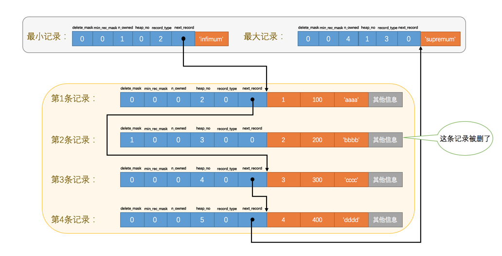
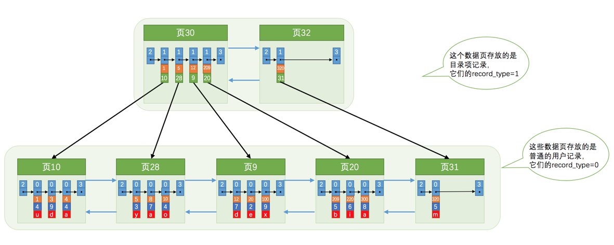
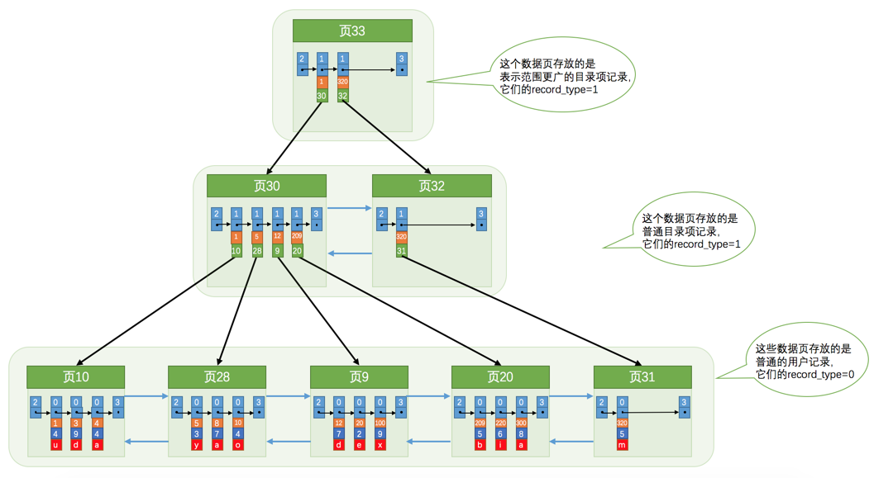
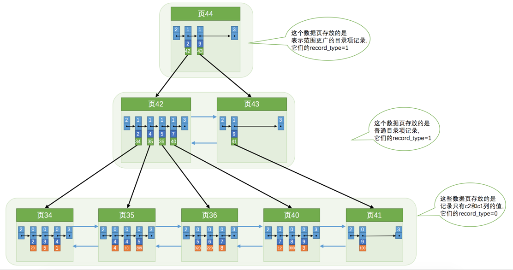
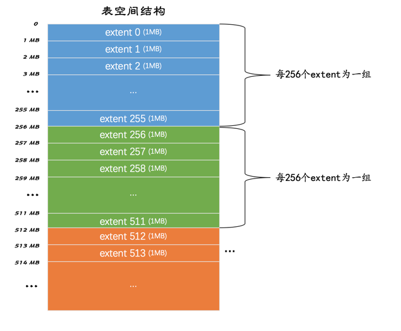

[TOC]
本篇文章是(Mysql是怎样运行的)阅读笔记，这本书网上很多人的评价都很高，看了下书也不是很厚，所以读读。
MySQL的架构
mysql 工作的整体流程为，客户端进程向服务器进程发送一段文本（MySQL语句），服务器进程处理后再向客户端进程发送一段文本（处理结果）。如图：
连接管理
客户端进程可以采用我们上边介绍的TCP/IP 、命名管道或共享内存、Unix域套接字这几种方式之一来与服务 器进程建立连接，每当有一个客户端进程连接到服务器进程时，服务器进程都会创建一个线程来专门处理与这个 客户端的交互，当该客户端退出时会与服务器断开连接，服务器并不会立即把与该客户端交互的线程销毁掉，而 是把它缓存起来，在另一个新的客户端再进行连接时，把这个缓存的线程分配给该新客户端。这样就起到了不频 繁创建和销毁线程的效果，从而节省开销。 当连接建立后，与该客户端关联的服务器线程会一直等待客户端发送过来的请求， MySQL 服务器接收到的请求只是一个文本消息，该文本消息还要经过各种处理，才能转化为mysql能识别的语句。
解析与优化
MySQL 服务器获得了文本形式的请求后，接着 还要经过九九八十一难的处理，其中的几个比较重要的部分分别是查询缓存、语法解析和查询优化。
查询缓存
MySQL 服务器程序处理查询请求时，会把刚刚处理过的查询请求和结果缓存起来，如果下一次有一模一样的请求过来，直接从缓存中查找结果就好了，就不用再傻呵呵的去底层的表中查找了。这个查询缓存可以在不同客户端之间共享，也就是说如果客户端A刚刚查询了一个语句，而客户端B之后发送了同样的查询请求，那么客户端B的这次查询就可以直接使用查询缓存中的数据。 当然， MySQL 服务器并没有人聪明，如果两个查询请求在任何字符上的不同（例如：空格、注释、大小写），都会导致缓存不会命中。另外，如果查询请求中包含某些系统函数、用户自定义变量和函数、一些系统表，如 mysql 、information_schema、 performance_schema 数据库中的表，那这个请求就不会被缓存。以某些系统函数举例，可能同样的函数的两次调用会产生不一样的结果，比如函数NOW ，每次调用都会产生最新的当前时间，如果在一个查询请求中调用了这个函数，那即使查询请求的文本信息都一样，那不同时间的两次查询也应该得到不同的结果，如果在第一次查询时就缓存了，那第二次查询的时候直接使用第一次查询的结果就是错误的！ 不过既然是缓存，那就有它缓存失效的时候。
MySQL的缓存系统会监测涉及到的每张表，只要该表的结构或者数据被修改，如对该表使用了INSERT 、 UPDATE 、DELETE 、TRUNCATE TABLE 、ALTER TABLE 、DROP TABLE 或 DROP DATABASE 语句，那使用该表的所有高速缓存查询都将变为无效并从高速缓存中删除！
虽然查询缓存有时可以提升系统性能，但也不得不因维护这块缓存而造成一些开销，比如每次都要去查 询缓存中检索，查询请求处理完需要更新查询缓存，维护该查询缓存对应的内存区域。从MySQL 5.7.20 开始，不推荐使用查询缓存，并在MySQL 8.0中删除。
语法解析
如果查询缓存没有命中，接下来就需要进入正式的查询阶段了。因为客户端程序发送过来的请求只是一段文本而已，所以MySQL 服务器程序首先要对这段文本做分析，判断请求的语法是否正确，然后从文本中将要查询的表、各种查询条件都提取出来放到MySQL 服务器内部使用的一些数据结构上来。
查询优化
语法解析之后，服务器程序获得到了需要的信息，比如要查询的列是哪些，表是哪个，搜索条件是什么等等，但光有这些是不够的，因为我们写的MySQL 语句执行起来效率可能并不是很高， MySQL 的优化程序会对我们的语句做一些优化，如外连接转换为内连接、表达式简化、子查询转为连接等。优化的结果就是生成一个执行计划，这个执行计划表明了应该使用哪些索引进行查询，表之间的连接顺序是啥样的。我们可以使用EXPLAIN 语句来查看某个语句的执行计划
存储引擎
截止到服务器程序完成了查询优化为止，还没有真正的去访问真实的数据表， MySQL 服务器把数据的存储和提取操作都封装到了一个叫存储引擎的模块里。我们知道表是由一行一行的记录组成的，但这只是一个逻辑上的概 念，物理上如何表示记录，怎么从表中读取数据，怎么把数据写入具体的物理存储器上，这都是存储引擎负责 的事情。为了实现不同的功能， MySQL 提供了各式各样的存储引擎，不同存储引擎管理的表具体的存储结构 可能不同，采用的存取算法也可能不同。
为了管理方便，人们把连接管理、查询缓存、语法解析、查询优化这些并不涉及真实数据存储的功能划分 为MySQL server 的功能，把真实存取数据的功能划分为存储引擎的功能。各种不同的存储引擎向上边的MySQL server 层提供统一的调用接口（也就是存储引擎API），包含了几十个底层函数，像"读取索引第一条内容"、“读 取索引下一条内容”、“插入记录"等等。
常用的存储引擎有：ARCHIVE、BLACKHOLE、InnoDB、MyISAM等，最常用的就是InnoDB 和MyISAM，其中InnoDB 是MySQL 默认的存储引擎。
深入研究InnoDB
InnoDB 是一个将表中的数据存储到磁盘上的存储引擎，所以即使关机后重启我们的数据还是存在的。而真正处 理数据的过程是发生在内存中的，所以需要把磁盘中的数据加载到内存中，如果是处理写入或修改请求的话，还 需要把内存中的内容刷新到磁盘上。而我们知道读写磁盘的速度非常慢，和内存读写差了几个数量级，所以当我 们想从表中获取某些记录时， InnoDB 存储引擎需要一条一条的把记录从磁盘上读出来么？不，那样会慢死， InnoDB 采取的方式是：将数据划分为若干个页，以页作为磁盘和内存之间交互的基本单位，InnoDB中页的大小 一般为 16 KB。也就是在一般情况下，一次最少从磁盘中读取16KB的内容到内存中，一次最少把内存中的16KB 内容刷新到磁盘中
InnoDB行格式
我们平时是以记录为单位来向表中插入数据的，这些记录在磁盘上的存放方式也被称为行格式或者记录格式。 设计InnoDB 存储引擎的大叔们到现在为止设计了4种不同类型的行格式，分别是Compact 、Redundant 、 Dynamic 和Compressed 行格式。
Compact

从图中可以看出来，一条完整的记录其实可以被分为记录的额外信息和记录的真实数据两大部分，下边我 们详细看一下这两部分的组成。
记录的额外信息
这部分信息是服务器为了描述这条记录而不得不额外添加的一些信息，这些额外信息分为3类，分别是变长字段 长度列表、NULL值列表和记录头信息，我们分别看一下。
变长字段长度列表
MySQL 支持一些变长的数据类型，比如VARCHAR(M) 、VARBINARY(M) 、各种TEXT 类型，各种BLOB 类型，我们也可以把拥有这些数据类型的列称为变长字段，变长字段中存储多少字节的数据是不固定的，所以我 们在存储真实数据的时候需要顺便把这些数据占用的字节数也存起来，这样才不至于把MySQL 服务器搞懵，所以 这些变长字段占用的存储空间分为两部分：
- 真正的数据内容
- 占用的字节数
在Compact 行格式中，把所有变长字段的真实数据占用的字节长度都存放在记录的开头部位，从而形成一个变长 字段长度列表，各变长字段数据占用的字节数按照列的顺序逆序存放，我们再次强调一遍，是逆序存放！
我们拿record_format_demo 表中的第一条记录来举个例子。因为record_format_demo 表的c1 、c2 、c4 列 都是VARCHAR(10) 类型的，也就是变长的数据类型，所以这三个列的值的长度都需要保存在记录开头处，因为 record_format_demo 表中的各个列都使用的是ascii 字符集，所以每个字符只需要1个字节来进行编码，来看 一下第一条记录各变长字段内容的长度：
| 列名 | 存储内容 | 内容长度（十进制表示） | 内容长度（十六进制表示） |
|---|---|---|---|
| c1 | ‘aaaa’ | 4 | 0x04 |
| c2 | ‘bbb’ | 3 | 0x03 |
| c4 | ’d' | 1 | 0x01 |
又因为这些长度值需要按照列的逆序存放，所以最后变长字段长度列表的字节串用十六进制表示的效果就是 （各个字节之间实际上没有空格，用空格隔开只是方便理解）： 01 03 04 把这个字节串组成的变长字段长度列表填入上边的示意图中的效果就是：
由于第一行记录中c1 、c2 、c4 列中的字符串都比较短，也就是说内容占用的字节数比较小，用1个字节就可 以表示，但是如果变长列的内容占用的字节数比较多，可能就需要用2个字节来表示。具体用1个还是2个字节来 表示真实数据占用的字节数， InnoDB 有它的一套规则，我们首先声明一下W 、M 和L 的意思：
- 假设某个字符集中表示一个字符最多需要使用的字节数为W ，也就是使用SHOW CHARSET 语句的结果中的 Maxlen 列，比方说utf8 字符集中的W 就是3 ， gbk 字符集中的W 就是2 ， ascii 字符集中的W 就是1 。
- 对于变长类型VARCHAR(M) 来说，这种类型表示能存储最多M 个字符（注意是字符不是字节），所以这个类 型能表示的字符串最多占用的字节数就是M×W 。
- 假设它实际存储的字符串占用的字节数是L 。
所以确定使用1个字节还是2个字节表示真正字符串占用的字节数的规则就是这样： 如果M×W <= 255 ，那么使用1个字节来表示真正字符串占用的字节数，为什么呢？很简单因为一个字节由8位二进制构成而8位二进制最多也只能表示256这个数，（但还有一位是标志位所以就是255）。
如果M×W > 255 ，则分为两种情况： 如果L <= 127 ，则用1个字节来表示真正字符串占用的字节数。 如果L > 127 ，则用2个字节来表示真正字符串占用的字节数。 InnoDB在读记录的变长字段长度列表时先查看表结构，如果某个变长字段允许存储的最大字节 数大于255时，该怎么区分它正在读的某个字节是一个单独的字段长度还是半个字段长度呢？ 设计InnoDB的大叔使用该字节的第一个二进制位作为标志位：如果该字节的第一个位为0，那 **该字节就是一个单独的字段长度（**使用一个字节表示不大于127的二进制的第一个位都为0）， 如果该字节的第一个位为1，那该字节就是半个字段长度。 对于一些占用字节数非常多的字段，比方说某个字段长度大于了16KB，那么如果该记录在单个 页面中无法存储时，InnoDB会把一部分数据存放到所谓的溢出页中（我们后边会唠叨），在变 长字段长度列表处只存储留在本页面中的长度，所以使用两个字节也可以存放下来。
总结一下就是说：如果该可变字段允许存储的最大字节数（ M×W ）超过255字节并且真实存储的字节数（ L ） 超过127字节，则使用2个字节，否则使用1个字节。
NULL值列表
我们知道表中的某些列可能存储NULL 值，如果把这些NULL 值都放到记录的真实数据中存储会很占地方，所 以Compact 行格式把这些值为NULL 的列统一管理起来，存储到NULL 值列表中，它的处理过程是这样的
- 首先统计表中允许存储NULL 的列有哪些。 我们前边说过，主键列、被NOT NULL 修饰的列都是不可以存储NULL 值的，所以在统计的时候不会把这些列 算进去。比方说表record_format_demo 的3个列c1 、c3 、c4 都是允许存储NULL 值的，而c2 列是被 NOT NULL 修饰，不允许存储NULL 值。
- 如果表中没有允许存储 NULL 的列，则 NULL值列表 也不存在了，否则将每个允许存储NULL 的列对应一个 二进制位，二进制位按照列的顺序逆序排列，二进制位表示的意义如下： 二进制位的值为1 时，代表该列的值为NULL 。 二进制位的值为0 时，代表该列的值不为NULL 。 再一次强调，二进制位按照列的顺序逆序排列，所以第一个列c1 和最后一个二进制位对应。：
- MySQL 规定NULL值列表必须用整数个字节的位表示，如果使用的二进制位个数不是整数个字节，则在字节 的高位补0 。表record_format_demo 只有3个值允许为NULL 的列，对应3个二进制位，不足一个字节，所以在字节的高位补0 ，效果就是这样：

知道了规则后，再看看null值列表应该怎么存储，因为只有c1 、c3 、c4 都是允许存储NULL 值的所以只需要一个字节。
对于第一条记录来说， c1 、c3 、c4 这3个列的值都不为NULL ，所以它们对应的二进制位都是0 ，用十六进制表示就是0x00 对于第二条记录来说， c1 、c3 、c4 这3个列中c3 和c4 的值都为NULL ，用十六进制表示就是： 0x06 。所以添加后为
记录头信息
除了变长字段长度列表、NULL值列表之外，还有一个用于描述记录的记录头信息，它是由固定的5 个字节组 成。5 个字节也就是40 个二进制位，不同的位代表不同的意思
记录的真实数据
对于record_format_demo 表来说， 记录的真实数据除了c1 、c2 、c3 、c4 这几个我们自己定义的列的数据 以外， MySQL 会为每个记录默认的添加一些列（也称为隐藏列），具体的列如下： 实际上这几个列的真正名称其实是：DB_ROW_ID （行ID唯一标识一条记录）、DB_TRX_ID（事务ID）、DB_ROLL_PTR（回滚指针）。 这里需要提一下InnoDB 表对主键的生成策略：优先使用用户自定义主键作为主键，如果用户没有定义主键，则 选取一个Unique 键作为主键，如果表中连Unique 键都没有定义的话，则InnoDB 会为表默认添加一个名为 row_id 的隐藏列作为主键。所以我们从上表中可以看出：InnoDB存储引擎会为每条记录都添加 transaction_id 和 roll_pointer 这两个列，但是 row_id 是可选的（在没有自定义主键以及Unique键的情况下才会添加该列）。 这些隐藏列的值不用我们操心， InnoDB 存储引擎会自己帮我们生成的。加上记录的真实数据的两个记录为：

看这个图的时候我们需要注意几点：
- 表record_format_demo 使用的是ascii 字符集，所以0x61616161 就表示字符串’aaaa' ， 0x626262 就表 示字符串’bbb' ，以此类推。
- 注意第1条记录中c3 列的值，它是CHAR(10) 类型的，它实际存储的字符串是： ‘cc’ ，而ascii 字符集中 的字节表示是'0x6363' ，虽然表示这个字符串只占用了2个字节，但整个c3 列仍然占用了10个字节的空 间，除真实数据以外的8个字节的统统都用空格字符填充，空格字符在ascii 字符集的表示就是0x20 。
- 注意第2条记录中c3 和c4 列的值都为NULL ，它们被存储在了前边的NULL值列表处，在记录的真实数据处 就不再冗余存储，从而节省存储空间。
对于 CHAR(M) 类型的列来说，当列采用的是定长字符集时，该列占用的字节数不会被加到变长字段长度列表，而如果采用变长字符集时，该列占用的字节数也会被加到变长字段长度列表。
另外有一点还需要注意，变长字符集的CHAR(M) 类型的列要求至少占用M 个字节，而VARCHAR(M) 却没有这个要求。比方说对于使用utf8 字符集的CHAR(10) 的列来说，该列存储的数据字节长度的范围是10～30个字节。即 使我们向该列中存储一个空字符串也会占用10 个字节，这是怕将来更新该列的值的字节长度大于原有值的字节 长度而小于10个字节时，可以在该记录处直接更新，而不是在存储空间中重新分配一个新的记录空间，导致原有 的记录空间成为所谓的碎片。
行溢出数据
我们知道对于VARCHAR(M) 类型的列最多可以占用65535 个字节。其中的M 代表该类型最多存储的字符数量，如果我们使用ascii 字符集的话，一个字符就代表一个字节。为什么最多是65535呢？很简单，因为前面讲过的
如果该可变字段允许存储的最大字节数（ M×W ）超过255字节并且真实存储的字节数（ L ） 超过127字节，则使用2个字节，否则使用1个字节。也就是说一个可变字段允许存储的最大字节数的长度最多只能用2个字节存储，而两个字节能表示的最大长度就是256*256=65536然后需要减去一个标志位。
MySQL 对一条记录占用的最大存储空间是有限制的，除了BLOB 或者TEXT 类型的列之外，其他所有的列（不包括隐藏列和记录头信息）占用的字节长度加起来不能超过65535 个字节。所以MySQL 服务器建议我们把存储类型改为TEXT 或者BLOB 的类型。这个65535 个字节除了列本身的数据之外，还包括一些其他的数据（ storage overhead ），比如说我们为了存储一个VARCHAR(M) 类型的列，其实需要占用3部分存储空间：
- 真实数据
- 真实数据占用字节的长度(变长字段长度列表最多为两个字节)
- NULL 值标识，如果该列有NOT NULL 属性则可以没有这部分存储空间（NULL值列表，一个字节）
因此，如果该VARCHAR(M)类型的列没有NOT NULL 属性，那最多只能存储65532 个字节的数据（65535-2-1），而根据字符集的不同，最大能存储的字符数也不同，比如gbk 字符集表示一个字符最多需要2 个字 节，那在该字符集下， M 的最大取值就是32766 （也就是：65532/2），也就是说最多能存储32766 个字符；utf8 字符集表示一个字符最多需要3 个字节，那在该字符集下， M 的最大取值就是21844 ，就是说最多能存储21844 （也就是：65532/3）个字符。
记录中的数据太多产生的溢出
MySQL 中磁盘和内存交互的基本单位是页，也就是说MySQL 是以页为基本单位来管理存储空间的，我们的记录都会被分配到某个页中存储。而一个页的大小一般是16KB ，也就是16384 字节，而一个VARCHAR(M) 类 型的列就最多可以存储65532 个字节，这样就可能造成一个页存放不了一条记录的尴尬情况
对于Compact 和Reduntant 行格式来说，如果某一列中的数据非常多的话，在本记录的真实数据处只会存储该列的前768 个字节的数据和一个指向其他页的地址，然后把剩下的数据存放到其他页中，这个过程也叫做行溢出，存储超出768 字节的那些页面也被称为溢出页
不只是 VARCHAR(M) 类型的列，其他的 TEXT、BLOB 类型的列在存储数据非常多的时候也会发生行溢出。
总结：对于Compact 来说，所占用的额外信息最多为27 字节：
-
2个字节用于存储真实数据的长度（最多）
-
1个字节用于存储列是否是NULL值（如果该列有NOT NULL 属性则可以没有这部分存储空间）
-
5个字节大小的头信息
-
6个字节的row_id 列（在没有自定义主键以及Unique键的情况下）
-
6个字节的transaction_id 列
-
7个字节的roll_pointer 列
Dynamic和Compressed行格式
Dynamic 和Compressed 行格式 ，这俩行格式和Compact 行格式挺像，只不过在处理行溢出数据时有点儿分歧，它们不会在记录的真实数据处存储字段真实数据的前768 个字节，而是把所有的字节都存储到其他页面中，只在记录的真实数据处存储其他页面的地址，就像这样：

其中mysql5.6 默认使用 Compact，mysql 5.7 默认使用Dynamic
InnoDB数据页结构
页是InnoDB 管理存储空间的基本单位，一个页的大小一般是16KB 。InnoDB 为了不同的目的而设计了许多种不同类型的页，比如存放表空间头部信息的页，存放Insert Buffer信息的页，存放INODE 信息的页，存放undo 日志信息的页等。我们聚焦的是那些存放我们表中记录的那种类型的页，官方称这种存放记录的页为索引（ INDEX ）页。数据页代表的这块16KB 大小的存储空间可以被划分为多个部分，不同部分有不同的功能，各个部分如图所示：

记录在页中的存储
在页的7个组成部分中，我们自己存储的记录会按照我们指定的行格式存储到User Records 部分。但是在一开 始生成页的时候，其实并没有User Records 这个部分，每当我们插入一条记录，都会从Free Space 部分，也就 是尚未使用的存储空间中申请一个记录大小的空间划分到User Records 部分，当Free Space 部分的空间全部 被User Records 部分替代掉之后，也就意味着这个页使用完了，如果还有新的记录插入的话，就需要去申请新 的页了，这个过程的图示如下：

为了更好的管理在User Records 中的这些记录， InnoDB 可费了一番力气呢，在哪费力气了呢？不就是把记录按 照指定的行格式一条一条摆在User Records 部分么？其实这话还得从记录行格式的记录头信息中说起。
记录头信息的秘密

由上图可以看出记录头信息中共有5个字节的数据，记录头信息中各个属性的大体意思为（基于Compact 行格式）：
| 名称 | 大小（单位：bit 位） | 描述 |
|---|---|---|
| 预留位1 | 1 | 没有使用 |
| 预留位2 | 1 | 没有使用 |
| delete_mask | 1 | 标记该记录是否被删除 |
| min_rec_mask | 1 | B+树的每层非叶子节点中的最小记录都会添加该标记 |
| n_owned | 4 | 表示当前记录拥有的记录数 |
| heap_no | 13 | 表示当前记录在记录堆的位置信息 |
| record_type | 3 | 表示当前记录的类型， 0 表示普通记录， 1 表示B+树非叶节点记录， 2 表示最小记录， 3表示最大记录 |
| next_record | 16 | 表示下一条记录的相对位置 |
下面，根据几个实例一起分析下

-
delete_mask 这个属性标记着当前记录是否被删除，占用1个二进制位，值为0 的时候代表记录并没有被删除，为1 的时 候代表记录被删除掉了。这些被删除的记录之所以不立即从磁盘上移除，是因为移除它们之后把其他的记录在磁盘上重新排列需要性能消耗，所以只是打一个删除标记而已，所有被删除掉的记录都会组成一个所谓的垃圾链表，在这个链表中的记录占用的空间称之为所谓的可重用空间，之后如果有新记录插入到表中的话，可能把这些被删除的记录占用的存储空间覆盖掉。
-
heap_no
这个属性表示当前记录在本页中的位置，从图中可以看出来，我们插入的4条记录在本页中的位置分别 是： 2 、3 、4 、5 。是不是少了点啥？是的，怎么不见heap_no 值为0 和1 的记录呢？这其实是设计InnoDB 的大叔们玩的一个小把戏，他们自动给每个页里边儿加了两个记录，由于这两个记录并不是我们自己插入的，所以有时候也称为伪记录或者虚拟记录。这两个伪记录一个代表最小记录，一个代表最大记录，等一下哈~，记录可以比大小么？是的，记录也可以比大小，对于一条完整的记录来说，比较记录的大小就是比较主键的大小。比方说我们插入的4行记录的主键值分别是： 1 、2 、3 、4 ，这也就意味着这4条记录的大小从小到大依次递增。但是不管我们向页中插入了多少自己的记录，设计InnoDB 的大叔们都规定他们定义的两条伪记录分别为最小记录与最大记录。这两条记录的构造十分简单，都是由5字节大小的记录头信息和8字节大小的一个固定的部分组成的，如图所示

由于这两条记录不是我们自己定义的记录，所以它们并不存放在页的User Records 部分，他们被单独放在 一个称为Infimum + Supremum 的部分。
-
next_record
它表示从当前记录的真实数据到下一条记录的真实数据的地址偏移量。比方说第一条记录的next_record 值为32 ，意味着从第一条记录的真实数据的地址处向后找32 个字节便是下一条记录的真实数据。如果你熟悉数据结构的话，就立即明白了，这其实是个链表，可以通过一条记录找到它的下一条记录。但是需要注意注意再注意的一点是， 下一条记录指得并不是按照我们插入顺序的下一条记录，而是按照主键值由小到大的顺序的下一条记录。而且规定 Infimum记录（也就是最小记录） 的下一条记录就是本页中主键值最小的用户记录，而本页中主键值最大的用户记录的下一条记录就是 Supremum记录（也就是最大记录） ，为了更形象的表示一下这个next_record 起到的作用，我们用箭头来替代一下next_record 中的地址偏移量

从图中可以看出来，我们的记录按照主键从小到大的顺序形成了一个单链表。最大记录的next_record 的 值为0 ，这也就是说最大记录是没有下一条记录了，它是这个单链表中的最后一个节点。如果从中删除掉 一条记录，这个链表也是会跟着变化的，比如我们把第2条记录删掉：

从图中可以看出来，删除第2条记录前后主要发生了这些变化：
-
第2条记录并没有从存储空间中移除，而是把该条记录的delete_mask 值设置为1 。
-
第2条记录的next_record 值变为了0，意味着该记录没有下一条记录了。
-
第1条记录的next_record 指向了第3条记录。
-
还有一点你可能忽略了，就是最大记录的n_owned 值从5 变成了4 ，关于这一点的变化我们稍后会详 细说明的。所以，不论我们怎么对页中的记录做增删改操作，InnoDB始终会维护一条记录的单链表，链表中的各个节点是按照主键值由小到大的顺序连接起来的。
Page Directory（页目录）
现在我们了解了记录在页中按照主键值由小到大顺序串联成一个单链表，那如果我们想根据主键值查找页中的某 条记录该咋办呢？比如说这样的查询语句： SELECT * FROM page_demo WHERE c1 = 3;
我们平常想从一本书中查找某个内容的时候，一般会先看目录，找到需要查找的内容对应的书的页码，然后到对 应的页码查看内容。设计InnoDB 的大叔们为我们的记录也制作了一个类似的目录，他们的制作过程是这样的：
- 将所有正常的记录（包括最大和最小记录，不包括标记为已删除的记录）划分为几个组。
- 每个组的最后一条记录（也就是组内最大的那条记录）的头信息中的n_owned 属性表示该记录拥有多少条记 录，也就是该组内共有几条记录。
- 将每个组的最后一条记录的地址偏移量单独提取出来按顺序存储到靠近页的尾部的地方，这个地方就是所 谓的Page Directory ，也就是页目录（此时应该返回头看看页面各个部分的图）。页面目录中的这些地址 偏移量被称为槽（英文名： Slot ），所以这个页面目录就是由槽组成的。
比方说现在的page_demo 表中正常的记录共有6条， InnoDB 会把它们分成两组，第一组中只有一个最小记录， 第二组中是剩余的5条记录，看下边的示意图：

从这个图中我们需要注意这么几点：
- 现在页目录部分中有两个槽，也就意味着我们的记录被分成了两个组， 槽1 中的值是112 ，代表最大记录 的地址偏移量（就是从页面的0字节开始数，数112个字节）； 槽0 中的值是99 ，代表最小记录的地址偏移 量。
- 注意最小和最大记录的头信息中的n_owned 属性
- 最小记录的n_owned 值为1 ，这就代表着以最小记录结尾的这个分组中只有1 条记录，也就是最小记录 本身。
- 最大记录的n_owned 值为5 ，这就代表着以最大记录结尾的这个分组中只有5 条记录，包括最大记录本 身还有我们自己插入的4 条记录。
用图表示就是：

为什么最小记录的n_owned 值为1，而最大记录的n_owned 值为5 呢，这里头有什么猫腻么？ 是的，设计InnoDB 的大叔们对每个分组中的记录条数是有规定的：对于最小记录所在的分组只能有 1 条记录， 最大记录所在的分组拥有的记录条数只能在 1~8 条之间，剩下的分组中记录的条数范围只能在是 4~8 条之间。 所以分组是按照下边的步骤进行的：
- 初始情况下一个数据页里只有最小记录和最大记录两条记录，它们分属于两个分组。
- 之后每插入一条记录，都会从页目录中找到主键值比本记录的主键值大并且差值最小的槽，然后把该槽对 应的记录的n_owned 值加1，表示本组内又添加了一条记录，直到该组中的记录数等于8个。
- 在一个组中的记录数等于8个后再插入一条记录时，会将组中的记录拆分成两个组，一个组中4条记录，另一 个5条记录。这个过程会在页目录中新增一个槽来记录这个新增分组中最大的那条记录的偏移量。
了解了页目录的组成后，那么怎么就加快查找速度的过程呢？看下这个例子

比方说我们想找主键值为6 的记录，过程是这样的：
- 计算中间槽的位置： (0+4)/2=2 ，所以查看槽2 对应记录的主键值为8 ，又因为8 > 6 ，所以设置 high=2 ， low 保持不变。
- 重新计算中间槽的位置： (0+2)/2=1 ，所以查看槽1 对应的主键值为4 ，又因为4 < 6 ，所以设置 low=1 ， high 保持不变。
- 因为high - low 的值为1，所以确定主键值为5 的记录在槽2 对应的组中。此刻我们需要找到槽2 中主键 值最小的那条记录，然后沿着单向链表遍历槽2 中的记录。但是我们前边又说过，每个槽对应的记录都是该 组中主键值最大的记录，这里槽2 对应的记录是主键值为8 的记录，怎么定位一个组中最小的记录呢？别忘 了各个槽都是挨着的，我们可以很轻易的拿到槽1 对应的记录（主键值为4 ），该条记录的下一条记录就 是槽2 中主键值最小的记录，该记录的主键值为5 。所以我们可以从这条主键值为5 的记录出发，遍历槽 2 中的各条记录，直到找到主键值为6 的那条记录即可。由于一个组中包含的记录条数只能是1~8条，所以 遍历一个组中的记录的代价是很小的。
这就是典型的二分法哈哈，总结：
- 通过二分法确定该记录所在的槽，并找到该槽中主键值最小的那条记录。
- 通过记录的next_record 属性遍历该槽所在的组中的各个记录。
这个就是索引为什么这么快的理由吗？？？
Page Header（页面头部）
设计InnoDB 的大叔们为了能得到一个数据页中存储的记录的状态信息，比如本页中已经存储了多少条记录，第 一条记录的地址是什么，页目录中存储了多少个槽等等，特意在页中定义了一个叫Page Header 的部分，它是 页结构的第二部分，这个部分占用固定的56 个字节，专门存储各种状态信息，具体各个字节都是干嘛的看下
| 名称 | 占用空间大小 | 描述 |
|---|---|---|
| PAGE_N_DIR_SLOTS | 2 字节 | 在页目录中的槽数量 |
| PAGE_HEAP_TOP | 2 字节 | 还未使用的空间最小地址，也就是说从该地址之后就是Free Space |
| PAGE_N_HEAP | 2 字节 | 本页中的记录的数量（包括最小和最大记录以及标记为删除的记录） |
| PAGE_FREE | 2 字节 | 第一个已经标记为删除的记录地址（各个已删除的记录通过next_record 也会组成一个单链表，这个单链表中的记录可以被重新利用） |
| PAGE_GARBAGE | 2 字节 | 已删除记录占用的字节数 |
| PAGE_LAST_INSERT | 2 字节 | 最后插入记录的位置 |
| PAGE_DIRECTION | 2 字节 | 记录插入的方向 |
| PAGE_N_DIRECTION | 2 字节 | 一个方向连续插入的记录数量 |
| PAGE_N_RECS | 2 字节 | 该页中记录的数量（不包括最小和最大记录以及被标记为删除的记录） |
| PAGE_MAX_TRX_ID | 8 字节 | 修改当前页的最大事务ID，该值仅在二级索引中定义 |
| PAGE_LEVEL | 2 字节 | 当前页在B+树中所处的层级 |
| PAGE_INDEX_ID | 8 字节 | 索引ID，表示当前页属于哪个索引 |
| PAGE_BTR_SEG_LEAF | 10 字节 | B+树叶子段的头部信息，仅在B+树的Root页定义 |
| PAGE_BTR_SEG_TOP | 10 字节 | B+树非叶子段的头部信息，仅在B+树的Root页定义 |
- PAGE_DIRECTION 假如新插入的一条记录的主键值比上一条记录的主键值大，我们说这条记录的插入方向是右边，反之则是左 边。用来表示最后一条记录插入方向的状态就是PAGE_DIRECTION 。
- PAGE_N_DIRECTION 假设连续几次插入新记录的方向都是一致的， InnoDB 会把沿着同一个方向插入记录的条数记下来，这个条 数就用PAGE_N_DIRECTION 这个状态表示。当然，如果最后一条记录的插入方向改变了的话，这个状态的值 会被清零重新统计。
File Header（文件头部）
Page Header 是专门针对数据页记录的各种状态信息，比方说页里头有多少个记录了呀，有多少个槽了呀。我们现在描述的File Header 针对各种类型的页都通用，也就是说不同类型的页都会以File Header 作为第一个组成部分，它描述了一些针对各种页都通用的一些信息，比方说这个页的编号是多少，它的上一个页、下一个页 这个部分占用固定的38 个字节，是由下边这些内容组成的
| 名称 | 占用空间大小 | 描述 |
|---|---|---|
| FIL_PAGE_SPACE_OR_CHKSUM | 4 字节 | 页的校验和（checksum值） |
| FIL_PAGE_OFFSET | 4 字节 | 页号，InnoDB 通过页号来可以唯一定位一个页 |
| FIL_PAGE_PREV | 4 字节 | 上一个页的页号 |
| FIL_PAGE_NEXT | 4 字节 | 下一个页的页号 |
| FIL_PAGE_LSN | 8 字节 | 页面被最后修改时对应的日志序列位置（英文名是：Log SequenceNumber） |
| FIL_PAGE_TYPE | 2 字节 | 该页的类型 |
| FIL_PAGE_FILE_FLUSH_LSN | 8 字节 | 仅在系统表空间的一个页中定义，代表文件至少被刷新到了对应的LSN值 |
| FIL_PAGE_ARCH_LOG_NO_OR_SPACE_ID | 4 字节 | 页属于哪个表空间 |
详解：
-
FIL_PAGE_SPACE_OR_CHKSUM
这个代表当前页面的校验和（checksum）。啥是个校验和？就是对于一个很长很长的字节串来说，我们会 通过某种算法来计算一个比较短的值来代表这个很长的字节串，这个比较短的值就称为校验和。这样在比 较两个很长的字节串之前先比较这两个长字节串的校验和，如果校验和都不一样两个长字节串肯定是不同 的，所以省去了直接比较两个比较长的字节串的时间损耗。
-
FIL_PAGE_TYPE
这个代表当前页的类型，我们前边说过， InnoDB 为了不同的目的而把页分为不同的类型，我们上边介绍的 其实都是存储记录的数据页，其实还有很多别的类型的页，我们存放记录的数据页的类型其实是FIL_PAGE_INDEX ，也就是所谓的索引页。
-
FIL_PAGE_PREV 和FIL_PAGE_NEXT
我们前边强调过， InnoDB 都是以页为单位存放数据的，有时候我们存放某种类型的数据占用的空间非常大 （比方说一张表中可以有成千上万条记录）， InnoDB 可能不可以一次性为这么多数据分配一个非常大的存 储空间，如果分散到多个不连续的页中存储的话需要把这些页关联起来， FIL_PAGE_PREV 和FIL_PAGE_NEXT 就分别代表本页的上一个和下一个页的页号。这样通过建立一个双向链表把许许多多的页就都串联起来了， 而无需这些页在物理上真正连着

File Trailer
我们知道InnoDB 存储引擎会把数据存储到磁盘上，但是磁盘速度太慢，需要以页为单位把数据加载到内存中处 理，如果该页中的数据在内存中被修改了，那么在修改后的某个时间需要把数据同步到磁盘中。但是在同步了一 半的时候中断电了咋办，这不是莫名尴尬么？为了检测一个页是否完整（也就是在同步的时候有没有发生只同步 一半的尴尬情况），设计InnoDB 的大叔们在每个页的尾部都加了一个File Trailer 部分，这个部分由8 个字 节组成，可以分成2个小部分：
- 前4个字节代表页的校验和 这个部分是和File Header 中的校验和相对应的。每当一个页面在内存中修改了，在同步之前就要把它的校 验和算出来，因为File Header 在页面的前边，所以校验和会被首先同步到磁盘，当完全写完时，校验和也 会被写到页的尾部，如果完全同步成功，则页的首部和尾部的校验和应该是一致的。如果写了一半儿断电 了，那么在File Header 中的校验和就代表着已经修改过的页，而在File Trialer 中的校验和代表着原先 的页，二者不同则意味着同步中间出了错。
- 后4个字节代表页面被最后修改时对应的日志序列位置（LSN） 这个部分也是为了校验页的完整性的
这个File Trailer 与File Header 类似，都是所有类型的页通用的。
总结
- InnoDB为了不同的目的而设计了不同类型的页，我们把用于存放记录的页叫做数据页。
- 一个数据页可以被大致划分为7个部分，分别是
- File Header ，表示页的一些通用信息，占固定的38字节。
- Page Header ，表示数据页专有的一些信息，占固定的56个字节。
- Infimum + Supremum ，两个虚拟的伪记录，分别表示页中的最小和最大记录，占固定的26 个字节。 User Records ：真实存储我们插入的记录的部分，大小不固定。
- Free Space ：页中尚未使用的部分，大小不确定。
- Page Directory ：页中的某些记录相对位置，也就是各个槽在页面中的地址偏移量，大小不固定，插 入的记录越多，这个部分占用的空间越多。
- File Trailer ：用于检验页是否完整的部分，占用固定的8个字节。
- 每个记录的头信息中都有一个next_record 属性，从而使页中的所有记录串联成一个单链表。
- InnoDB 会为把页中的记录划分为若干个组，每个组的最后一个记录的地址偏移量作为一个槽，存放在 Page Directory 中，所以在一个页中根据主键查找记录是非常快的，分为两步：
- 通过二分法确定该记录所在的槽。
- 通过记录的next_record属性遍历该槽所在的组中的各个记录。
- 每个数据页的File Header 部分都有上一个和下一个页的编号，所以所有的数据页会组成一个双链表。
- 为保证从内存中同步到磁盘的页的完整性，在页的首部和尾部都会存储页中数据的校验和和页面最后修改时 对应的LSN 值，如果首部和尾部的校验和和LSN 值校验不成功的话，就说明同步过程出现了问题。
深入研究B+树索引
前边我们详细唠叨了InnoDB 数据页的7个组成部分，知道了各个数据页可以组成一个双向链表，而每个数据页 中的记录会按照主键值从小到大的顺序组成一个单向链表，每个数据页都会为存储在它里边儿的记录生成一个 页目录，在通过主键查找某条记录的时候可以在页目录中使用二分法快速定位到对应的槽，然后再遍历该槽对 应分组中的记录即可快速找到指定的记录。页和记录的关系示意图如下：

没有索引的查找
我们先了解一下没有索引的时候是怎么查找记录的。为了方便大家理解，我们下边先只唠叨搜索条件为对某个列精确匹配的情况，所谓精确匹配，就是搜索条件中用等于= 连接起的表达式，比如这样：
SELECT [列名列表] FROM 表名 WHERE 列名 = xxx;
在一个页中的查找
假设目前表中的记录比较少，所有的记录都可以被存放到一个页中，在查找记录的时候可以根据搜索条件的不同 分为两种情况：
- 以主键为搜索条件 这个查找过程我们已经很熟悉了，可以在页目录中使用二分法快速定位到对应的槽，然后再遍历该槽对应 分组中的记录即可快速找到指定的记录。 以其他列作为搜索条件
- 对非主键列的查找的过程可就不这么幸运了，因为在数据页中并没有对非主键列建立所谓的页目录，所以 我们无法通过二分法快速定位相应的槽。这种情况下只能从最小记录开始依次遍历单链表中的每条记录， 然后对比每条记录是不是符合搜索条件。很显然，这种查找的效率是非常低的。
在很多页中查找
大部分情况下我们表中存放的记录都是非常多的，需要好多的数据页来存储这些记录。在很多页中查找记录的话 可以分为两个步骤：
- 定位到记录所在的页。
- 从所在的页内中查找相应的记录。
在没有索引的情况下，不论是根据主键列或者其他列的值进行查找，由于我们并不能快速的定位到记录所在的 页，所以只能从第一个页沿着双向链表一直往下找，在每一个页中根据我们刚刚唠叨过的查找方式去查找指定的 记录。因为要遍历所有的数据页，所以这种方式显然是超级耗时的。
索引
新建一个index_demo 表，该表有2个INT 类型的列，1个CHAR(1) 类型的列，而且我们规定了c1 列为主键，这个 表使用Compact 行格式来实际存储记录的。为了我们理解上的方便，我们简化了一下index_demo 表的行格式示 意图：

把一些记录放到页里边的示意图就是：
一个简单的索引方案
我们在根据某个搜索条件查找一些记录时为什么要遍历所有的数据页呢？因为各个页中的记录并没有
规律，我们并不知道我们的搜索条件匹配哪些页中的记录，所以不得不依次遍历所有的数据页
所以如果我们想快速的定位到需要查找的记录在哪些数据页中该咋办？还记得我们为根据主键值快速定位一条记录在页中的位置而设立的页目录么？我们也可以想办法为快速定位记录所在的数据页而建立一个别的目录，建这个目录必须完成下边这些事儿：
-
下一个数据页中用户记录的主键值必须大于上一个页中用户记录的主键值。
我们这里需要做一个假设：假设我们的每个数据页最多能存放3条记录（实际上一个 数据页非常大，可以存放下好多记录）。有了这个假设之后我们向index_demo 表插入3条记录：
mysql> INSERT INTO index_demo VALUES(1, 4, 'u'), (3, 9, 'd'), (5, 3, 'y');那么这些记录已经按照主键值的大小串联成一个单向链表了，如图所示：

此时我们再来插入一条记录:
INSERT INTO index_demo VALUES(4, 4, 'a');
因为页10 最多只能放3条记录，所以我们不得不再分配一个新页：
新分配的数据页编号可能并不是连续的，也就是说我们使用的这些页在存储空间里可能并不挨着。它们只是通过维护着上一个页和下一个页的编号而建立了链表关系
页10 中用户记录最大的主键值是5 ，而页28 中有一条记录的主键值是4 ，因为5>4 ，所以这就不符合下一个数据页中用户记录的主键值必须大于上一个页中用户记录的主键值的要求，所以在插入主键值为4 的记录的时候需要伴随着一次记录移动，也就是把主键值为5 的记录移动到页28 中，然后再把主键值为4 的记录插入到页10 中，这个过程的示意图如下:
这个过程表明了在对页中的记录进行增删改操作的过程中，我们必须通过一些诸如记录移动的操作来始终保
证这个状态一直成立：下一个数据页中用户记录的主键值必须大于上一个页中用户记录的主键值。这个过程
我们也可以称为页分裂。
-
给所有的页建立一个目录项
由于数据页的编号可能并不是连续的，所以在向index_demo 表中插入许多条记录后，可能是这样的效果：

因为这些16KB 的页在物理存储上可能并不挨着，所以如果想从这么多页中根据主键值快速定位某些记录所 在的页，我们需要给它们做个目录，每个页对应一个目录项，每个目录项包括下边两个部分：
- 页的用户记录中最小的主键值，我们用key 来表示。
- 页号，我们用page_no 表示。
所以我们为上边几个页做好的目录就像这样子：

以页28 为例，它对应目录项2 ，这个目录项中包含着该页的页号28 以及该页中用户记录的最小主键值5 。我们只需要把几个目录项在物理存储器上连续存储，比如把他们放到一个数组里，就可以实现根据主键值快速查找某条记录的功能了。比方说我们想找主键值为20 的记录，具体查找过程分两步：
- 先从目录项中根据二分法快速确定出主键值为20 的记录在目录项3 中（因为 12 < 20 < 209 ），它对应的页是页9 。
- 再根据前边说的在页中查找记录的方式去页9 中定位具体的记录。
至此，针对数据页做的简易目录就搞定了。不过忘了说了，这个目录有一个别名，称为索引
InnoDB中的索引方案
上边之所以称为一个简易的索引方案，是因为我们为了在根据主键值进行查找时使用二分法快速定位具体的目录 项而假设所有目录项都可以在物理存储器上连续存储，但是这样做有几个问题：
- InnoDB 是使用页来作为管理存储空间的基本单位，也就是最多能保证16KB 的连续存储空间，而随着表中记 录数量的增多，需要非常大的连续的存储空间才能把所有的目录项都放下，这对记录数量非常多的表是不现 实的。
- 我们时常会对记录进行增删，假设我们把页28 中的记录都删除了， 页28 也就没有存在的必要了，那意味 着目录项2 也就没有存在的必要了，这就需要把目录项2 后的目录项都向前移动一下，这种牵一发而动全身 的设计不是什么好主意～
所以，设计InnoDB 的大叔们需要一种可以灵活管理所有目录项的方式。他们灵光乍现，忽然发现这些目录项 其实长得跟我们的用户记录差不多，只不过目录项中的两个列是主键和页号而已，所以他们复用了之前存储 用户记录的数据页来存储目录项，为了和用户记录做一下区分，我们把这些用来表示目录项的记录称为目录项记 录。那InnoDB 怎么区分一条记录是普通的用户记录还是目录项记录呢？别忘了记录头信息里的 record_type 属性，它的各个取值代表的意思如下：
- 0 ：普通的用户记录
- 1 ：目录项记录
- 2 ：最小记录
- 3 ：最大记录 哈哈，原来这个值为1 的record_type 是这个意思呀，我们把前边使用到的目录项放到数据页中的样子就是这 样：
从图中可以看出来，我们新分配了一个编号为30 的页来专门存储目录项记录。这里再次强调一遍目录项记录 和普通的用户记录的不同点：
- 目录项记录的record_type 值是1，而普通用户记录的record_type 值是0。
- 目录项记录只有主键值和页的编号两个列，而普通的用户记录的列是用户自己定义的，可能包含很多列， 另外还有InnoDB 自己添加的隐藏列。
- 还记得我们之前在唠叨记录头信息的时候说过一个叫min_rec_mask 的属性么，只有在存储目录项记录的页 中的主键值最小的目录项记录的min_rec_mask 值为1 ，其他别的记录的min_rec_mask 值都是0 。
除了上述几点外，这两者就没啥差别了，它们用的是一样的数据页，页的组成结构也是一样一样的（就是我们前边介绍过的7个部分），都会为主键值生成Page Directory （页目录），从而在按照主键值进行查找时可以使用二分法来加快查询速度。现在以查找主键为20 的记录为例，根据某个主键值去查找记录的步骤就可以大致拆分成下边两步:
- 先到存储目录项记录的页，也就是页30 中通过二分法快速定位到对应目录项，因为12 < 20 < 209 ，所 以定位到对应的记录所在的页就是页9 。
- 再到存储用户记录的页9 中根据二分法快速定位到主键值为20 的用户记录
虽然说目录项记录中只存储主键值和对应的页号，比用户记录需要的存储空间小多了，但是不论怎么说一个页 只有16KB 大小，能存放的目录项记录也是有限的，那如果表中的数据太多，以至于一个数据页不足以存放所有 的目录项记录，该咋办呢？
当然是再多整一个存储目录项记录的页喽～ 为了大家更好的理解新分配一个目录项记录页的过程，我们假设 一个存储目录项记录的页最多只能存放4条目录项记录，所以如果此时我们再向上图中插入一条主键值为320 的用户记录的话，那就需要分配一个新的存储目录项记录的页喽：

从图中可以看出，我们插入了一条主键值为320 的用户记录之后需要两个新的数据页：
- 为存储该用户记录而新生成了页31 。
- 因为原先存储目录项记录的页30 的容量已满（我们前边假设只能存储4条目录项记录），所以不得不需 要一个新的页32 来存放页31 对应的目录项。
现在因为存储目录项记录的页不止一个，所以如果我们想根据主键值查找一条用户记录大致需要3个步骤，以查 找主键值为20 的记录为例：
- 确定目录项记录页 我们现在的存储目录项记录的页有两个，即页30 和页32 ，又因为页30 表示的目录项的主键值的范围是 [1, 320) ， 页32 表示的目录项的主键值不小于320 ，所以主键值为20 的记录对应的目录项记录在页30 中。
- 通过目录项记录页确定用户记录真实所在的页。
- 在真实存储用户记录的页中定位到具体的记录。
那么问题来了，在这个查询步骤的第1步中我们需要定位存储目录项记录的页，但是这些页在存储空间中也可能 不挨着，如果我们表中的数据非常多则会产生很多存储目录项记录的页，那我们怎么根据主键值快速定位一个 存储目录项记录的页呢？其实也简单，为这些存储目录项记录的页再生成一个更高级的目录，就像是一个多级 目录一样，大目录里嵌套小目录，小目录里才是实际的数据，所以现在各个页的示意图就是这样子

如图，我们生成了一个存储更高级目录项的页33 ，这个页中的两条记录分别代表页30 和页32 ，如果用户记录 的主键值在[1, 320) 之间，则到页30 中查找更详细的目录项记录，如果主键值不小于320 的话，就到页32 中查找更详细的目录项记录。随着表中记录的增加，这个目录的层级会继续增加，如果简化一下，那么我们可以用下边这个图来描述它:
这他妈的就是B+树了！！！
更多b+树问题参考博文:
不论是存放用户记录的数据页，还是存放目录项记录的数据页，我们都把它们存放到B+ 树这个数据结构中了， 所以我们也称这些数据页为节点。从图中可以看出来，我们的实际用户记录其实都存放在B+树的最底层的节点 上，这些节点也被称为叶子节点或叶节点，其余用来存放目录项的节点称为非叶子节点或者内节点，其 中B+ 树最上边的那个节点也称为根节点。
从图中可以看出来，一个B+ 树的节点其实可以分成好多层，设计InnoDB 的大叔们为了讨论方便，规定最下边的 那层，也就是存放我们用户记录的那层为第0 层，之后依次往上加。之前的讨论我们做了一个非常极端的假设： 存放用户记录的页最多存放3条记录，存放目录项记录的页最多存放4条记录。其实真实环境中一个页存放的记录 数量是非常大的，假设，假设，假设所有存放用户记录的叶子节点代表的数据页可以存放100条用户记录，所有 存放目录项记录的内节点代表的数据页可以存放1000条目录项记录，那么：
- 如果B+ 树只有1层，也就是只有1个用于存放用户记录的节点，最多能存放100 条记录。
- 如果B+ 树有2层，最多能存放1000×100=100000 条记录。
- 如果B+ 树有3层，最多能存放1000×1000×100=100000000 条记录。
- 如果B+ 树有4层，最多能存放1000×1000×1000×100=100000000000 条记录。
你的表里能存放100000000000 条记录么？所以一般情况下，我们用到的B+ 树都不会超过4层，那我们通过主键 值去查找某条记录最多只需要做4个页面内的查找（查找3个目录项页和一个用户记录页），又因为在每个页面内 有所谓的Page Directory （页目录），所以在页面内也可以通过二分法实现快速定位记录。
聚簇索引
我们上边介绍的B+ 树本身就是一个目录，或者说本身就是一个索引。它有两个特点：
- 使用记录主键值的大小进行记录和页的排序，这包括三个方面的含义：
- 页内的记录是按照主键的大小顺序排成一个单向链表。
- 各个存放用户记录的页也是根据页中用户记录的主键大小顺序排成一个双向链表。
- 存放目录项记录的页分为不同的层次，在同一层次中的页也是根据页中目录项记录的主键大小顺序排成 一个双向链表。
- B+ 树的叶子节点存储的是完整的用户记录。 所谓完整的用户记录，就是指这个记录中存储了所有列的值（包括隐藏列）。
我们把具有这两种特性的B+ 树称为聚簇索引，所有完整的用户记录都存放在这个聚簇索引的叶子节点处。这 种聚簇索引并不需要我们在MySQL 语句中显式的使用INDEX 语句去创建（后边会介绍索引相关的语句）， InnoDB 存储引擎会自动的为我们创建聚簇索引。另外有趣的一点是，在InnoDB 存储引擎中， 聚簇索引就是数 据的存储方式（所有的用户记录都存储在了叶子节点），也就是所谓的索引即数据，数据即索引。
二级索引
大家有木有发现，上边介绍的聚簇索引只能在搜索条件是主键值时才能发挥作用，因为B+ 树中的数据都是按照 主键进行排序的。那如果我们想以别的列作为搜索条件该咋办呢？难道只能从头到尾沿着链表依次遍历记录么？ 不，我们可以多建几棵B+ 树，不同的B+ 树中的数据采用不同的排序规则。比方说我们用c2 列的大小作为数据 页、页中记录的排序规则，再建一棵B+ 树，效果如下图所示：

这个B+ 树与上边介绍的聚簇索引有几处不同：
- 使用记录c2 列的大小进行记录和页的排序，这包括三个方面的含义：
- 页内的记录是按照c2 列的大小顺序排成一个单向链表。
- 各个存放用户记录的页也是根据页中记录的c2 列大小顺序排成一个双向链表。
- 存放目录项记录的页分为不同的层次，在同一层次中的页也是根据页中目录项记录的c2 列大小顺序排 成一个双向链表。
- B+ 树的叶子节点存储的并不是完整的用户记录，而只是c2列+主键这两个列的值。
- 目录项记录中不再是主键+页号的搭配，而变成了c2列+页号的搭配。
所以如果我们现在想通过c2 列的值查找某些记录的话就可以使用我们刚刚建好的这个B+ 树了。以查找c2 列的 值为4 的记录为例，查找过程如下：
- 确定目录项记录页 根据根页面，也就是页44 ，可以快速定位到目录项记录所在的页为页42 （因为2 < 4 < 9 ）。
- 通过目录项记录页确定用户记录真实所在的页。 在页42 中可以快速定位到实际存储用户记录的页，但是由于c2 列并没有唯一性约束，所以c2 列值为4 的 记录可能分布在多个数据页中，又因为2 < 4 ≤ 4 ，所以确定实际存储用户记录的页在页34 和页35 中。
- 在真实存储用户记录的页中定位到具体的记录。 到页34 和页35 中定位到具体的记录。
- 但是这个B+ 树的叶子节点中的记录只存储了c2 和c1 （也就是主键）两个列，所以我们必须再根据主键 值去聚簇索引中再查找一遍完整的用户记录。
我们根据这个以c2 列大小排序的B+ 树只能确定我们要查找记录的主键值，所以如果我们想根据c2 列的值查找到完整的用户记录的话，仍然需要到聚簇索引中再查一遍，这个过程也被称为回表。也就是根据c2 列的值查询一条完整的用户记录需要使用到2 棵B+ 树！！！
因为这种按照非主键列建立的B+ 树需要一次回表操作才可以定位到完整的用户记录，所以这种B+ 树也被称为二级索引（英文名secondary index ），或者辅助索引。由于我们使用的是c2 列的大小作为B+ 树的排序规则，所以我们也称这个B+ 树为为c2列建立的索引。
联合索引
我们也可以同时以多个列的大小作为排序规则，也就是同时为多个列建立索引，比方说我们想让B+ 树按照c2 和c3 列的大小进行排序，这个包含两层含义：
- 先把各个记录和页按照c2 列进行排序。
- 在记录的c2 列相同的情况下，采用c3 列进行排序

如图所示，我们需要注意一下几点：
- 每条目录项记录都由c2 、c3 、页号这三个部分组成，各条记录先按照c2 列的值进行排序，如果记录 的c2 列相同，则按照c3 列的值进行排序。
- B+ 树叶子节点处的用户记录由c2 、c3 和主键c1 列组成。
千万要注意一点，以c2和c3列的大小为排序规则建立的B+树称为联合索引，本质上也是一个二级索引。它的意思 与分别为c2和c3列分别建立索引的表述是不同的，不同点如下：
- 建立联合索引只会建立如上图一样的1棵B+ 树。
- 为c2和c3列分别建立索引会分别以c2 和c3 列的大小为排序规则建立2棵B+ 树。
B+树索引的注意事项
根页面万年不动窝
我们前边介绍B+ 树索引的时候，为了大家理解上的方便，先把存储用户记录的叶子节点都画出来，然后接着画 存储目录项记录的内节点，实际上B+ 树的形成过程是这样的：
- 每当为某个表创建一个B+ 树索引（聚簇索引不是人为创建的，默认就有）的时候，都会为这个索引创建一 个根节点页面。最开始表中没有数据的时候，每个B+ 树索引对应的根节点中既没有用户记录，也没有目 录项记录。
- 随后向表中插入用户记录时，先把用户记录存储到这个根节点中。
- 当根节点中的可用空间用完时继续插入记录，此时会将根节点中的所有记录复制到一个新分配的页，比 如页a 中，然后对这个新页进行页分裂的操作，得到另一个新页，比如页b 。这时新插入的记录根据键值 （也就是聚簇索引中的主键值，二级索引中对应的索引列的值）的大小就会被分配到页a 或者页b 中，而 根节点便升级为存储目录项记录的页。
这个过程需要大家特别注意的是：一个B+树索引的根节点自诞生之日起，便不会再移动。这样只要我们对某个表 建立一个索引，那么它的根节点的页号便会被记录到某个地方，然后凡是InnoDB 存储引擎需要用到这个索引的 时候，都会从那个固定的地方取出根节点的页号，从而来访问这个索引。
内节点中目录项记录的唯一性
我们知道B+ 树索引的内节点中目录项记录的内容是索引列 + 页号的搭配，但是这个搭配对于二级索引来说有 点儿不严谨。还拿index_demo 表为例，假设这个表中的数据是这样的
| c1 | c2 | c3 |
|---|---|---|
| 1 | 1 | ‘u’ |
| 3 | 1 | ’d' |
| 5 | 1 | ‘y’ |
| 7 | 1 | ‘a’ |
如果二级索引中目录项记录的内容只是索引列 + 页号的搭配的话，那么为c2 列建立索引后的B+ 树应该长这 样：
如果我们想新插入一行记录，其中c1 、c2 、c3 的值分别是： 9 、1 、‘c’ ，那么在修改这个为c2 列建立 的二级索引对应的B+ 树时便碰到了个大问题：由于页3 中存储的目录项记录是由c2列 + 页号的值构成的， 页3 中的两条目录项记录对应的c2 列的值都是1 ，而我们新插入的这条记录的c2 列的值也是1 ，那我们这条 新插入的记录到底应该放到页4 中，还是应该放到页5 中啊？
为了让新插入记录能找到自己在哪个页里，我们需要保证在B+树的同一层内节点的目录项记录除页号这个字段 以外是唯一的。所以对于二级索引的内节点的目录项记录的内容实际上是由三个部分构成的：
- 索引列的值
- 主键值
- 页号
也就是我们把主键值也添加到二级索引内节点中的目录项记录了，这样就能保证B+ 树每一层节点中各条目录项
记录除页号这个字段外是唯一的，所以我们为c2 列建立二级索引后的示意图实际上应该是这样子的
一个页面最少存储2条记录
我们前边说过一个B+树只需要很少的层级就可以轻松存储数亿条记录，查询速度杠杠的！这是因为B+树本质上 就是一个大的多层级目录，每经过一个目录时都会过滤掉许多无效的子目录，直到最后访问到存储真实数据的目 录。那如果一个大的目录中只存放一个子目录是个啥效果呢？那就是目录层级非常非常非常多，而且最后的那个 存放真实数据的目录中只能存放一条记录。所以InnoDB 的一个数据页至少可以存放两条记录，这也是我们之前唠叨记录行格式的时候说过一个结论（我们当时依据这个结论推导了表中只有一个列时该列在不发生行溢出的情况下最多能存储多少字节，忘了的话回去看看吧）。
MyISAM中的索引方案简单介绍
至此，我们介绍的都是InnoDB 存储引擎中的索引方案，我们有必要再简单介绍一下MyISAM 存储引擎中的索引方案。我们知道InnoDB 中索引即数据，也就是聚簇索引的那棵B+ 树的叶子节点中已经把所有完整的用户记录都包含了，而MyISAM 的索引方案虽然也使用树形结构，但是却将索引和数据分开存储：
- 将表中的记录按照记录的插入顺序单独存储在一个文件中，称之为数据文件。这个文件并不划分为若干个 数据页，有多少记录就往这个文件中塞多少记录就成了。我们可以通过行号而快速访问到一条记录。 MyISAM 记录也需要记录头信息来存储一些额外数据，我们以上边唠叨过的index_demo 表为例，看一下这个 表中的记录使用MyISAM 作为存储引擎在存储空间中的表示：
由于在插入数据的时候并没有刻意按照主键大小排序，所以我们并不能在这些数据上使用二分法进行查找。
-
使用MyISAM 存储引擎的表会把索引信息另外存储到一个称为索引文件的另一个文件中。MyISAM 会单独为 表的主键创建一个索引，只不过在索引的叶子节点中存储的不是完整的用户记录，而是主键值 + 行号的组 合。也就是先通过索引找到对应的行号，再通过行号去找对应的记录！ 这一点和InnoDB 是完全不相同的，在InnoDB 存储引擎中，我们只需要根据主键值对聚簇索引进行一次查 找就能找到对应的记录，而在MyISAM 中却需要进行一次回表操作，意味着MyISAM 中建立的索引相当于全 部都是二级索引
-
如果有需要的话，我们也可以对其它的列分别建立索引或者建立联合索引，原理和InnoDB 中的索引差不 多，不过在叶子节点处存储的是相应的列 + 行号。这些索引也全部都是二级索引
MySQL中创建和删除索引的语句
建表时
CREATE TALBE 表名 (
各种列的信息 ··· ,
[KEY|INDEX] 索引名 (需要被索引的单个列或多个列)
)
其中的KEY 和INDEX 是同义词，任意选用一个就可以
添加索引
ALTER TABLE 表名 ADD [INDEX|KEY] 索引名 (需要被索引的单个列或多个列);
删除索引
ALTER TABLE 表名 DROP [INDEX|KEY] 索引名
索引名建议：以idx_ 为前缀，后边跟着需要建立索引的列名，多个列名之间用下划线_ 分隔开。
B+树索引的使用
B+ 树索引总结:
- 每个索引都对应一棵B+ 树， B+ 树分为好多层，最下边一层是叶子节点，其余的是内节点。所有用户记录 都存储在B+ 树的叶子节点，所有目录项记录都存储在内节点。
- InnoDB 存储引擎会自动为主键（如果没有它会自动帮我们添加）建立聚簇索引，聚簇索引的叶子节点包含 完整的用户记录。
- 我们可以为自己感兴趣的列建立二级索引， 二级索引的叶子节点包含的用户记录由索引列 + 主键组 成，所以如果想通过二级索引来查找完整的用户记录的话，需要通过回表操作，也就是在通过二级索引 找到主键值之后再到聚簇索引中查找完整的用户记录。
- B+ 树中每层节点都是按照索引列值
从小到大的顺序排序而组成了双向链表，而且每个页内的记录（不论是 用户记录还是目录项记录）都是按照索引列的值从小到大的顺序而形成了一个单链表。如果是联合索引的 话，则页面和记录先按照联合索引前边的列排序，如果该列值相同，再按照联合索引后边的列排序。 - 通过索引查找记录是从B+ 树的根节点开始，一层一层向下搜索。由于每个页面都按照索引列的值建立了 Page Directory （页目录），所以在这些页面中的查找非常快。
索引的代价
- 空间上的代价 这个是显而易见的，每建立一个索引都要为它建立一棵B+ 树，每一棵B+ 树的每一个节点都是一个数据页， 一个页默认会占用16KB 的存储空间，一棵很大的B+ 树由许多数据页组成，那可是很大的一片存储空间呢。
- 时间上的代价 每次对表中的数据进行增、删、改操作时，都需要去修改各个B+ 树索引。而且我们讲过， B+ 树每层节点都 是按照索引列的值从小到大的顺序排序而组成了双向链表。不论是叶子节点中的记录，还是内节点中的记录 （也就是不论是用户记录还是目录项记录）都是按照索引列的值从小到大的顺序而形成了一个单向链表。而 增、删、改操作可能会对节点和记录的排序造成破坏，所以存储引擎需要额外的时间进行一些记录移位，页 面分裂、页面回收啥的操作来维护好节点和记录的排序。如果我们建了许多索引，每个索引对应的B+ 树都 要进行相关的维护操作，这还能不给性能拖后腿么？
所以说，一个表上索引建的越多，就会占用越多的存储空间，在增删改记录的时候性能就越差。
B+树索引适用的条件
下边我们将唠叨许多种让B+ 树索引发挥最大效能的技巧和注意事项，先创建一个person_info表，这个表是用来存储人的一些基本信息的：
CREATE TABLE person_info(
id INT NOT NULL auto_increment,
name VARCHAR(100) NOT NULL,
birthday DATE NOT NULL,
phone_number CHAR(11) NOT NULL,
country varchar(100) NOT NULL,
PRIMARY KEY (id),
KEY idx_name_birthday_phone_number (name, birthday, phone_number)
);
对于这个person_info 表我们需要注意两点：
- 表中的主键是id 列，它存储一个自动递增的整数。所以InnoDB 存储引擎会自动为id 列建立聚簇索引。
- 我们额外定义了一个二级索引idx_name_birthday_phone_number ，它是由3个列组成的联合索引。所以在这个索引对应的B+ 树的叶子节点处存储的用户记录只保留name 、birthday 、phone_number 这三个列的值 以及主键id 的值，并不会保存country 列的值。
person_info 表会为聚簇索引和idx_name_birthday_phone_number 索引建立2棵B+ 树。下边我们画一下索引 idx_name_birthday_phone_number 的示意图，不过既然我们已经掌握了InnoDB 的B+ 树索引原理，那我们在画 图的时候为了让图更加清晰，所以在省略一些不必要的部分，比如记录的额外信息，各页面的页号等等，其中内 节点中目录项记录的页号信息我们用箭头来代替，在记录结构中只保留name 、birthday 、phone_number 、 id 这四个列的真实数据值
从图中可以看出这个idx_name_birthday_phone_number 索引对应的B+ 树中页面和记录的排序方式就是这的：
- 先按照name 列的值进行排序。
- 如果name 列的值相同，则按照birthday 列的值进行排序。
- 如果birthday 列的值也相同，则按照phone_number 的值进行排序
全值匹配
如果我们的搜索条件中的列和索引列一致的话，这种情况就称为全值匹配,例如：
SELECT * FROM person_info WHERE name = 'Ashburn' AND birthday = '1990-09-27' AND phone_number = '15123983239';
这个毫无疑问会走索引，但WHERE 子句中的几个搜索条件的顺序对查询结果有啥影响么？也就是说如果我们调换 name 、birthday 、phone_number 这几个搜索列的顺序对查询的执行过程有影响么？例如：
SELECT * FROM person_info WHERE birthday = '1990-09-27' AND phone_number = '15123983239' AND name = 'Ashburn';
答案是：没影响哈。MySQL 有查询优化器，会分析这些搜索条件并且按照可以使用的索引中列的顺序来决定先使用哪个搜索条件，后使用哪个搜索条件。
匹配左边的列
其实在我们的搜索语句中也可以不用包含全部联合索引中的列，只包含左边的就行，比方说下边的查询语句：
SELECT * FROM person_info WHERE name = 'Ashburn';
或者包含多个左边的列也行：
SELECT * FROM person_info WHERE name = 'Ashburn' AND birthday = '1990-09-27';
那这条查询语句能用到索引吗？
SELECT * FROM person_info WHERE birthday = '1990-09-27';
答案是用不到，因为B+ 树的数据页和记录先是按照name 列的值排序的，在name 列的值相同的情况下才使用birthday 列进行排序，也就是说name 列的值不同的记录中birthday 的值可能是无序的
需要特别注意的一点是，如果我们想使用联合索引中尽可能多的列，搜索条件中的各个列必须是联合索引中从最左边开始连续的列。比方说联合索引idx_name_birthday_phone_number 中列的定义顺序是name 、birthday 、phone_number ，如果我们的搜索条件中只有name 和phone_number ，而没有中间的birthday ，比方说这样：
SELECT * FROM person_info WHERE name = 'Ashburn' AND phone_number = '15123983239';
这样只能用到name 列的索引， birthday 和phone_number 的索引就用不上了，因为name 值相同的记录先按照 birthday 的值进行排序， birthday 值相同的记录才按照phone_number 值进行排序
匹配列前缀
为某个列建立索引的意思其实就是在对应的B+ 树的记录中使用该列的值进行排序，比方说person_info 表上建立的联合索引idx_name_birthday_phone_number 会先用name 列的值进行排序，字符串排序使用的当然就是字典序，也就是说这些字符串的前n个字符，也就是前缀都是排好序的，所以对于字符串类型的索引列来说，我们只匹配它的前缀也是可以快速定位记录的，例如：
走索引 SELECT * FROM person_info WHERE name LIKE 'As%';
不走索引 SELECT * FROM person_info WHERE name LIKE '%As%';
匹配范围值
idx_name_birthday_phone_number 索引的B+ 树示意图，所有记录都是按照索引列的值从小到大的顺序排好序的，所以这极大的方便我们查找索引列的值在某个范围内的记录。比方说下边这个查询语句
SELECT * FROM person_info WHERE name > 'Asa' AND name < 'Barlow';
由于B+ 树中的数据页和记录是先按name 列排序的，所以我们上边的查询过程其实是这样的：
- 找到name 值为Asa 的记录(查找到范围的下限)。
- 遍历链表找到name 值为Barlow 的记录（查找到范围的上限）由于所有记录都是由链表连起来的（记录之间用单链表，数据页之间用双链表）
- 找到这些记录的主键值，再到聚簇索引中回表查找完整的记录。
注意
如果对多个列同时进行范围查找的话，只有对索引最左边的那个列进行范围查找的时候才能用到B+ 树索引，
SELECT * FROM person_info WHERE name > 'Asa' AND name < 'Barlow' AND birthday > '1980-01-01';
上边这个查询可以分成两个部分：
- 通过条件name > ‘Asa’ AND name < ‘Barlow’ 来对name 进行范围，查找的结果可能有多条name 值不同的 记录
- 对这些name 值不同的记录继续通过birthday > ‘1980-01-01’ 条件继续过滤。 这样子对于联合索引idx_name_birthday_phone_number 来说，只能用到name 列的部分，而用不到birthday 列的部分，因为只有name 值相同的情况下才能用birthday 列的值进行排序，而这个查询中通过name 进行范围查找的记录中可能并不是按照birthday 列进行排序的，所以在搜索条件中继续以birthday 列进行查找时是用不到这个B+ 树索引的。
而与上面相反的是，精确匹配某一列并范围匹配另外一列,如
SELECT * FROM person_info WHERE name = 'Ashburn' AND birthday > '1980-01-01' AND birthday
< '2000-12-31' AND phone_number > '15100000000';
这个查询的条件可以分为3个部分：
- name = ‘Ashburn’ ，对name 列进行精确查找，当然可以使用B+ 树索引了。
- birthday > ‘1980-01-01’ AND birthday < ‘2000-12-31’ ，由于name 列是精确查找，所以通过name = ‘Ashburn’ 条件查找后得到的结果的name 值都是相同的，它们会再按照birthday 的值进行排序。所以此时 对birthday 列进行范围查找是可以用到B+ 树索引的。
- phone_number > ‘15100000000’ ，通过birthday 的范围查找的记录的birthday 的值可能不同，所以这个 条件无法再利用B+ 树索引了，只能遍历上一步查询得到的记录。
用于排序
我们在写查询语句的时候经常需要对查询出来的记录通过ORDER BY 子句按照某种规则进行排序。一般情况下， 我们只能把记录都加载到内存中，再用一些排序算法，比如快速排序、归并排序等等在内存中对这些记录进行排序，有的时候可能查询的结果集太大以至于不能在内存中进行排序的话，还可能暂时借助磁盘的空间来存放中间结果，排序操作完成后再把排好序的结果集返回到客户端。在MySQL 中，把这种在内存中或者磁盘上进行排序的方式统称为文件排序（英文名： filesort ），文件排序是很慢的。但是如果ORDER BY 子句里使用到了我们的 索引列，就有可能省去在内存或文件中排序的步骤，比如下边这个简单的查询语句
SELECT * FROM person_info ORDER BY name, birthday, phone_number LIMIT 10;
因为有idx_name_birthday_phone_number 索引，所以直接从索引中提取数据，然后进行回表操作取出所有数据
对于联合索引有个问题需要注意， ORDER BY 的子句后边的列的顺序也必须按照索引列的顺序给出，否则也不能使用索引，同理， ORDER BY name 、ORDER BY name, birthday 这种匹配索引左边的列的形式可以使用部分的B+ 树索引。当联合索引左边列的值为常量，也可以使用后边的列进行排序，比如这样
SELECT * FROM person_info WHERE name = 'A' ORDER BY birthday, phone_number LIMIT 10;
不可以使用索引进行排序的几种情况
ASC、DESC混用
对于使用联合索引进行排序的场景，我们要求各个排序列的排序顺序是一致的，也就是要么各个列都是ASC 规则 排序，要么都是DESC 规则排序。
如果查询中的各个排序列的排序顺序是一致的，比方说下边这两种情况：
- ORDER BY name, birthday LIMIT 10 这种情况直接从索引的最左边开始往右读10行记录就可以了。
- ORDER BY name DESC, birthday DESC LIMIT 10 ， 这种情况直接从索引的最右边开始往左读10行记录就可以了。
但是是先按照name 列进行升序排列，再按照birthday 列进行降序排列的话，比如说这样的查询语句：
SELECT * FROM person_info ORDER BY name, birthday DESC LIMIT 10;
就不能走索引
WHERE子句中出现非排序使用到的索引列
SELECT * FROM person_info WHERE country = 'China' ORDER BY name LIMIT 10;
这个查询只能先把符合搜索条件country = ‘China’ 的记录提取出来后再进行排序，使用不到索引。
SELECT * FROM person_info WHERE name = 'A' ORDER BY birthday, phone_number LIMIT 10;
虽然这个查询也有搜索条件，但是name = ‘A’ 可以使用到索引idx_name_birthday_phone_number ，而且过滤剩 下的记录还是按照birthday 、phone_number 列排序的，所以还是可以使用索引进行排序的
排序列包含非同一个索引的列
有时候用来排序的多个列不是一个索引里的，这种情况也不能使用索引进行排序，比方说：
SELECT * FROM person_info ORDER BY name, country LIMIT 10;
name 和country (即使country为索引列也不行)并不属于一个联合索引中的列，所以无法使用索引进行排序
排序列使用了复杂的表达式
SELECT * FROM person_info ORDER BY UPPER(name) LIMIT 10;
使用了UPPER 函数修饰过的列就不是单独的列了，这样就无法使用索引进行排序。
用于分组
SELECT name, birthday, phone_number, COUNT(*) FROM person_info GROUP BY name, birthday, phone_number
和使用B+ 树索引进行排序使用规则相同，分组列的顺序也需要和索引列的顺序一致，也可以只使用索引列中左边 的列进行分组等
回表的代价
SELECT * FROM person_info WHERE name > 'Asa' AND name < 'Barlow';
在使用idx_name_birthday_phone_number 索引进行查询时大致可以分为这两个步骤：
- 从索引idx_name_birthday_phone_number 对应的B+ 树中取出name 值在Asa ～ Barlow 之间的用户记录。
- 由于索引idx_name_birthday_phone_number 对应的B+ 树用户记录中只包含name 、birthday 、 phone_number 、id 这4个字段，而查询列表是* ，意味着要查询表中所有字段，也就是还要包括country 字段。这时需要把从上一步中获取到的每一条记录的id 字段都到聚簇索引对应的B+ 树中找到完整的用户记 录，也就是我们通常所说的回表，然后把完整的用户记录返回给查询用户。
由于索引idx_name_birthday_phone_number 对应的B+ 树中的记录首先会按照name 列的值进行排序，所以值
在Asa ～ Barlow 之间的记录在磁盘中的存储是相连的，集中分布在一个或几个数据页中，我们可以很快的把这
些连着的记录从磁盘中读出来，这种读取方式我们也可以称为顺序I/O。根据第1步中获取到的记录的id 字段
的值可能并不相连，而在聚簇索引中记录是根据id （也就是主键）的顺序排列的，所以根据这些并不连续的id
值到聚簇索引中访问完整的用户记录可能分布在不同的数据页中，这样读取完整的用户记录可能要访问更多的数
据页，这种读取方式我们也可以称为随机I/O 。一般情况下，顺序I/O比随机I/O的性能高很多。所以这个使用索引idx_name_birthday_phone_number 的查询有这么两个特点：
- 会使用到两个B+ 树索引，一个二级索引，一个聚簇索引。
- 访问二级索引使用顺序I/O ，访问聚簇索引使用随机I/O 。
需要回表的记录越多，使用二级索引的性能就越低，甚至让某些查询宁愿使用全表扫描也不使用二级索引。比 方说name 值在Asa ～ Barlow 之间的用户记录数量占全部记录数量90%以上，那么如果使用 idx_name_birthday_phone_number 索引的话，有90%多的id 值需要回表，还不如直接去扫描聚簇索引（也就是全表扫描）。
那什么时候采用全表扫描的方式，什么时候使用采用二级索引 + 回表的方式去执行查询呢？
查询优化器会事先对表中的记录计算一些统计数据，然后再利用这些统计数据根据查询的条件来计算一下需要回表的记录数，需要回表的记录数越多，就越倾向于使用全表扫描，反之倾向于使用二级索引 + 回表的方式。
一般情况下，限制查询获取较少的记录数会让优化器更倾向于选择使用二级索引 + 回表的方式进行查询，因为回表的记录越少，性能提升就越高，比方说上边的查询可以改写成这样：
SELECT * FROM person_info WHERE name > 'Asa' AND name < 'Barlow' LIMIT 10;
同样排序也可以：SELECT * FROM person_info ORDER BY name, birthday, phone_number LIMIT 10;
覆盖索引
为了彻底告别回表操作带来的性能损耗，最好在查询列表里只包含索引列，比如：
SELECT name, birthday, phone_number FROM person_info WHERE name > 'Asa' AND name < 'Barlo
w'
因为只查询name , birthday , phone_number 这三个索引列的值，所以通idx_name_birthday_phone_number 索引得到结果后就不必到聚簇索引中再查找记录的剩余列，这样就省去了回表操作带来的性能损耗。我们把这种只需要用到索引的查询方式称为索引覆盖,所以坚决不能用* 号作为查询列表，最好把我们需要查询的列依次标明。
如何挑选索引
只为用于搜索、排序或分组的列创建索引
只为出现在WHERE 子句中的列、连接子句中的连接列，或者出现在ORDER BY 或GROUP BY 子句中的 列创建索引。而出现在查询列表中的列就没必要建立索引了
考虑列的基数
列的基数指的是某一列中不重复数据的个数，比方说某个列包含值2, 5, 8, 2, 5, 8, 2, 5, 8 ，虽然有9 条记录，但该列的基数却是3 。也就是说，在记录行数一定的情况下，列的基数越大，该列中的值越分散，列的基数越小，该列中的值越集中。假设某个列的基数为1 ，也就是所有记录在该列中的值都一样，那为该列建立索引是没有用的，因为所有值都一样就无法排序，无法进行快速查找了，而且如果某个建立了二级索引的列的重复值特别多，那么使用这个二级索引查出的记录还可能要做回表操作，这样性能损耗就更大了。
所以结论就是：最好为那些列的基数大的列建立索引，为基数太小列的建立索引效果可能不好（索引尽量建在数据重复不多的列上，比如XX_id,但XX_time上则不合适）
索引列的类型尽量小
我们在定义表结构的时候要显式的指定列的类型，以整数类型为例，有TINYINT 、MEDIUMINT 、INT 、BIGINT 这么几种，它们占用的存储空间依次递增，我们这里所说的类型大小指的就是该类型表示的数据范围的大小。 能表示的整数范围当然也是依次递增，如果我们想要对某个整数列建立索引的话，在表示的整数范围允许的情况 下，尽量让索引列使用较小的类型，比如我们能使用INT 就不要使用BIGINT ，能使用MEDIUMINT 就不要使用 INT ～ 这是因为：
- 数据类型越小，在查询时进行的比较操作越快（这是CPU层次的东东）
- 数据类型越小，索引占用的存储空间就越少，在一个数据页内就可以放下更多的记录，从而减少磁盘I/O 带 来的性能损耗，也就意味着可以把更多的数据页缓存在内存中，从而加快读写效率。
这个建议对于表的主键来说更加适用，因为不仅是聚簇索引中会存储主键值，其他所有的二级索引的节点处都会 存储一份记录的主键值，如果主键适用更小的数据类型，也就意味着节省更多的存储空间和更高效的I/O
索引字符串值的前缀
只对字符串的前几个字符进行索引也就是说在二级索引的记录中只保留字符串前几个字符。这样在查找记录时虽然不能精确的定位到记录的位置，但是能定位到相应前缀所在的位置，然后根据前缀相同的记录的主键值回表查询完整的字符串值，再对比就好了。这样只在B+ 树中存储字符串的前几个字符的编码，既节约空间，又减少了字符串的比较时间，比方说我们在建表语句中只对name 列的前10个字符进行索引可以这么写：
CREATE TABLE person_info(
name VARCHAR(100) NOT NULL,
birthday DATE NOT NULL,
phone_number CHAR(11) NOT NULL,
country varchar(100) NOT NULL,
KEY idx_name_birthday_phone_number (name(10), birthday, phone_number)
);
name(10) 就表示在建立的B+ 树索引中只保留记录的前10 个字符的编码，这种只索引字符串值的前缀的策略是 我们非常鼓励的，尤其是在字符串类型能存储的字符比较多的时候。
SELECT * FROM person_info ORDER BY name LIMIT 10;
因为二级索引中不包含完整的name 列信息，所以无法对前十个字符相同，后边的字符不同的记录进行排序，也 就是使用索引列前缀的方式无法支持使用索引排序，只好乖乖的用文件排序喽。
让索引列在比较表达式中单独出现
假设表中有一个整数列my_col ，我们为这个列建立了索引。下边的两个WHERE 子句虽然语义是一致的，但是在 效率上却有差别：
- WHERE my_col * 2 < 4
- WHERE my_col < 4/2
第1个WHERE 子句中my_col 列并不是以单独列的形式出现的，而是以my_col * 2 这样的表达式的形式出现的， 存储引擎会依次遍历所有的记录，计算这个表达式的值是不是小于4 ，所以这种情况下是使用不到为my_col 列 建立的B+ 树索引的。而第2个WHERE 子句中my_col 列并是以单独列的形式出现的，这样的情况可以直接使用 B+ 树索引。 所以结论就是：如果索引列在比较表达式中不是以单独列的形式出现，而是以某个表达式，或者函数调用形式出 现的话，是用不到索引的。
主键插入顺序
我们知道，对于一个使用InnoDB 存储引擎的表来说，在我们没有显式的创建索引时，表中的数据实际上都是存 储在聚簇索引的叶子节点的。而记录又是存储在数据页中的，数据页和记录又是按照记录主键值从小到大的顺 序进行排序，所以如果我们插入的记录的主键值是依次增大的话，那我们每插满一个数据页就换到下一个数据页 继续插，而如果我们插入的主键值忽大忽小的话，这就比较麻烦了，假设某个数据页存储的记录已经满了，它存 储的主键值在1~100 之间：

如果此时再插入一条主键值为9 的记录，那它插入的位置就如下图：
可这个数据页已经满了啊，再插进来咋办呢？我们需要把当前页面分裂成两个页面，把本页中的一些记录移动到 新创建的这个页中。页面分裂和记录移位意味着什么？意味着：性能损耗！所以如果我们想尽量避免这样无谓的 性能损耗最好让插入的记录的主键值依次递增
冗余和重复索引
有时候有的同学有意或者无意的就对同一个列创建了多个索引，比方说这样写建表语句：
CREATE TABLE person_info(
id INT UNSIGNED NOT NULL AUTO_INCREMENT,
name VARCHAR(100) NOT NULL,
birthday DATE NOT NULL,
phone_number CHAR(11) NOT NULL,
country varchar(100) NOT NULL,
PRIMARY KEY (id),
KEY idx_name_birthday_phone_number (name(10), birthday, phone_number),
KEY idx_name (name(10))
);
通过idx_name_birthday_phone_number 索引就可以对name 列进行快速搜索，再创建一个专门针对name 列的索引就算是一个冗余索引，维护这个索引只会增加维护的成本，并不会对搜索有什么好处。这个自己也犯过
总结
-
B+ 树索引在空间和时间上都有代价，所以没事儿别瞎建索引。
-
B+ 树索引适用于下边这些情况：
- 全值匹配
- 匹配左边的列
- 匹配范围值
- 精确匹配某一列并范围匹配另外一列
- 用于排序
- 用于分组
-
在使用索引时需要注意下边这些事项：
- 只为用于搜索、排序或分组的列创建索引
- 为列的基数大的列创建索引
- 索引列的类型尽量小
- 可以只对字符串值的前缀建立索引
- 只有索引列在比较表达式中单独出现才可以适用索引
- 为了尽可能少的让聚簇索引发生页面分裂和记录移位的情况，主键一定要依次递增。
- 定位并删除表中的重复和冗余索引
- 尽量使用覆盖索引进行查询，避免回表带来的性能损耗。
InnoDB的表空间
表空间是一个抽象的概念，对于系统表空间来说，对应着文件系统中一个或多个实际文件；对于每个独立表空间来说，对应着文件系统中一个名为表名.ibd 的实际文件。大家可以把表空间想象成被切分为许许多多个页的池子，当我们想为某个表插入一条记录的时候，就从池子中捞出一个对应的页来把数据写进去。
独立表空间结构
InnoDB 支持许多种类型的表空间，重点关注独立表空间和系统表空间的结构。它们的结构比较相似。
区（extent）的概念
表空间中的页实在是太多了，为了更好的管理这些页面，提出了区（英文名： extent ）的概念。对于16KB的页来说，连续的64个页就是一个区，也就是说一个区默认占用1MB空间大小。不论是系统表空间还是独立表空间，都可以看成是由若干个区组成的，每256个区被划分成一组

这些组的头几个页面的类型都是类似的，就像这样
从上图中我们能得到如下信息：
- 第一个组最开始的3个页面的类型是固定的，也就是说extent 0 这个区最开始的3个页面的类型是固定的，
分别是：
- FSP_HDR 类型：这个类型的页面是用来登记整个表空间的一些整体属性以及本组所有的区，也就是extent 0 ~ extent 255 这256个区的属性，稍后详细唠叨。需要注意的一点是，整个表空间只有一个FSP_HDR 类型的页面。
- IBUF_BITMAP 类型：这个类型的页面是存储本组所有的区的所有页面关于INSERT BUFFER 的信息。
- INODE 类型：这个类型的页面存储了许多称为INODE 的数据结构。
- 其余各组最开始的2个页面的类型是固定的，也就是说extent 256 、extent 512 这些区最开始的2个页面
的类型是固定的，分别是：
- XDES 类型：全称是extent descriptor ，用来登记本组256个区的属性，也就是说对于在extent 256 区中的该类型页面存储的就是extent 256 ~ extent 511 这些区的属性，对于在extent 512 区中的该 类型页面存储的就是extent 512 ~ extent 767 这些区的属性。上边介绍的FSP_HDR 类型的页面其实 和XDES 类型的页面的作用类似，只不过FSP_HDR 类型的页面还会额外存储一些表空间的属性。
- IBUF_BITMAP 类型：上边介绍过了。
总之，表空间被划分为许多连续的区，每个区默认由64个页组成，每256个区划分为一组，每个组的最开始的几个页面类型是固定的
段（segment）的概念
为啥好端端的提出一个区（ extent ）的概念呢？我们以前分析问题的套路都是这样的：表中的记录存储到页里 边儿，然后页作为节点组成B+ 树，这个B+ 树就是索引，但我们来考虑一下下边这个场景：
- 我们每向表中插入一条记录，本质上就是向该表的聚簇索引以及所有二级索引代表的B+ 树的节点中插入数 据。而B+ 树的每一层中的页都会形成一个双向链表，如果是以页为单位来分配存储空间的话，双向链表相 邻的两个页之间的物理位置可能离得非常远。我们介绍B+ 树索引的适用场景的时候特别提到范围查询只需 要定位到最左边的记录和最右边的记录，然后沿着双向链表一直扫描就可以了，而如果链表中相邻的两个页 物理位置离得非常远，就是所谓的随机I/O 。再一次强调，磁盘的速度和内存的速度差了好几个数量级， 随 机I/O 是非常慢的，所以我们应该尽量让链表中相邻的页的物理位置也相邻，这样进行范围查询的时候才可 以使用所谓的顺序I/O
所以才引入了区（ extent ）的概念，一个区就是在物理位置上连续的64个页。。在表中数据量大的时候，为某个索引分配空间的时候就不再按照页为单位分配了，而是按照区为单位分配，甚至在表中的数据十分非常特别多的时候，可以一次性分配多个连续的区。
我们提到的范围查询，其实是对B+ 树叶子节点中的记录进行顺序扫描，而如果不区分叶子节点和非叶子节点，统统把节点代表的页面放到申请到的区中的话，进行范围扫描的效果就大打折扣了。所以设计InnoDB 的大叔们对B+ 树的叶子节点和非叶子节点进行了区别对待，也就是说叶子节点有自己独有的区，非叶子节点也有自己独有的区。存放叶子节点的区的集合就算是一个段（ segment ），存放非叶子节点的区的集合也算是一个段。也就是说一个索引会生成2个段，一个叶子节点段，一个非叶子节点段。
默认情况下一个使用InnoDB 存储引擎的表只有一个聚簇索引，一个索引会生成2个段，而段是以区为单位申请存 储空间的，一个区默认占用1M存储空间，所以默认情况下一个只存了几条记录的小表也需要2M的存储空间么？ 以后每次添加一个索引都要多申请2M的存储空间么？这对于存储记录比较少的表简直是天大的浪费。设计InnoDB 的大叔们提出了一个碎片（fragment）区的概念，也就是在一个碎片区中，并不是所有的页都是为了存储同一个段的数据而存在的，而是碎片区中的页可以用于不同的目的，比如有些页用于段A，有些页用于段B，有些页甚至哪个段都不属于。碎片区直属于表空间，并不属于任何一个段。所以此后为某个段分配存储空间的策略是这样的：
- 在刚开始向表中插入数据的时候，段是从某个碎片区以单个页面为单位来分配存储空间的。
- 当某个段已经占用了32个碎片区页面之后，就会以完整的区为单位来分配存储空间。
所以现在段不能仅定义为是某些区的集合，更精确的应该是某些零散的页面以及一些完整的区的集合
区的分类
表空间是由若干个区组成的，这些区大体上可以分为4种类型：
- 空闲的区（Free）：现在还没有用到这个区中的任何页面。
- 有剩余空间的碎片区(FREE_FRAG)：表示碎片区中还有可用的页面。
- 没有剩余空间的碎片区(FULL_FRAG)：表示碎片区中的所有页面都被使用，没有空闲页面。
- 附属于某个段的区(FSEG)。每一个索引都可以分为叶子节点段和非叶子节点段，除此之外InnoDB还会另外定义一些特殊作用的段，在这些段中的数据量很大时将使用区来作为基本的分配单位。
这4种类型的区也可以被称为区的4种状态（ Free、FREE_FRAG、FULL_FRAG、FSEG）,处于FREE 、FREE_FRAG 以及FULL_FRAG 这三种状态的区都是独立的，算是直属于表空间；而处于FSEG 状态的区是附属于某个段的
如果把表空间比作是一个集团军，段就相当于师，区就相当于团。一般的团都是隶属于某个师的，就像 是处于
FSEG的区全都隶属于某个段，而处于FREE、FREE_FRAG以及FULL_FRAG这三种状态的区却 直接隶属于表空间，就像独立团直接听命于军部一样。
为了方便管理这些区，设计InnoDB 的大叔设计了一个称为XDES Entry 的结构（全称就是Extent Descriptor Entry），每一个区都对应着一个XDES Entry 结构，这个结构记录了对应的区的一些属性。
XDES Entry 是一个40个字节的结构，大致分为4个部分，各个部分的释义如下：
- Segment ID （8字节） 每一个段都有一个唯一的编号，用ID表示，此处的Segment ID 字段表示就是该区所在的段。当然前提是该 区已经被分配给某个段了，不然的话该字段的值没啥意义。
- List Node （12字节）
这个部分可以将若干个XDES Entry 结构串联成一个链表，如果我们想定位表空间内的某一个位置的话，只需指定页号以及该位置在指定页号中的页内偏移量即可。
- Pre Node Page Number 和Pre Node Offset 的组合就是指向前一个XDES Entry 的指针
- Next Node Page Number 和Next Node Offset 的组合就是指向后一个XDES Entry 的指针。
也就是说把一些XDES Entry 结构连成了一个链表
-
State （4字节）
这个字段表明区的状态。可选的值就是我们前边说过的那4个，分别是： FREE 、FREE_FRAG 、FULL_FRAG 和FSEG
-
Page State Bitmap （16字节） 这个部分共占用16个字节，也就是128个比特位。我们说一个区默认有64个页，这128个比特位被划分为64 个部分，每个部分2个比特位，对应区中的一个页。比如Page State Bitmap 部分的第1和第2个比特位对应 着区中的第1个页面，第3和第4个比特位对应着区中的第2个页面，依此类推， Page State Bitmap 部分的第 127和128个比特位对应着区中的第64个页面。这两个比特位的第一个位表示对应的页是否是空闲的，第二个 比特位还没有用
XDES Entry链表
我们已经提出了五花八门的概念，什么区、段、碎片区、附属于段的区、XDES Entry 结构，走远了千万别忘了自己为什么出发，我们把事情搞这么麻烦的初心仅仅是想提高向表插入数据的效率又不至于数据量少的表浪费空间。我们知道向表中插入数据本质上就是向表中各个索引的叶子节点段、非叶子节点段插入数据，也知道了不同的区有不同的状态，再回到最初的起点，捋一捋向某个段中插入数据的过程
-
当段中数据较少的时候，首先会查看表空间中是否有状态为FREE_FRAG 的区，也就是找还有空闲空间的碎片区，如果找到了，那么从该区中取一些零碎的页把数据插进去；否则到表空间下申请一个状态为FREE 的区，也就是空闲的区，把该区的状态变为FREE_FRAG ，然后从该新申请的区中取一些零碎的页把数据插进去。之后不同的段使用零碎页的时候都会从该区中取，直到该区中没有空闲空间，然后该区的状态就变成了FULL_FRAG 。
现在的问题是你怎么知道表空间里的哪些区是FREE 的，哪些区的状态FREE_FRAG 的，哪些区是FULL_FRAG 的？要知道表空间的大小是可以不断增大的，当增长到GB级别的时候，区的数量也就上千了， 我们总不能每次都遍历这些区对应的XDES Entry 结构吧？这时候就是XDES Entry 中的List Node 部分发挥奇效的时候了，我们可以通过List Node 中的指针，做这么三件事：
-
把状态为FREE 的区对应的XDES Entry 结构通过List Node 来连接成一个链表，这个链表我们就称之为FREE 链表。
- 把状态为FREE_FRAG 的区对应的XDES Entry 结构通过List Node 来连接成一个链表，这个链表我们就称之为FREE_FRAG 链表。
- 把状态为FULL_FRAG 的区对应的XDES Entry 结构通过List Node 来连接成一个链表，这个链表我们就称之为FULL_FRAG 链表。 这样每当我们想找一个FREE_FRAG 状态的区时，就直接把FREE_FRAG 链表的头节点拿出来，从这个节点中取一些零碎的页来插入数据，当这个节点对应的区用完时，就修改一下这个节点的State 字段的值，然后从FREE_FRAG 链表中移到FULL_FRAG 链表中。同理，如果FREE_FRAG 链表中一个节点都没有，那 么就直接从FREE 链表中取一个节点移动到FREE_FRAG 链表的状态，并修改该节点的STATE 字段值为FREE_FRAG ，然后从这个节点对应的区中获取零碎的页就好了。
-
当段中数据已经占满了32个零散的页后，就直接申请完整的区来插入数据
还是那个问题，我们怎么知道哪些区属于哪个段的呢？再遍历各个XDES Entry 结构？遍历是不可能遍历的，这辈子都不可能遍历的，有链表还遍历个毛线啊。所以我们把状态为FSEG 的区对应的XDES Entry 结构都加入到一个链表喽？傻呀，不同的段哪能共用一个区呢？你想把索引a的叶子节点段和索引b的叶子节点段都存储到一个区中么？显然我们想要每个段都有它独立的链表，所以可以根据段号（也就是Segment ID ）来建立链表，有多少个段就建多少个链表？好像也有点问题，因为一个段中可以有好多个区，有的区是完全空闲的，有的区还有一些页面可以用，有的区已经没有空闲页面可以用了，所以我们有必要继续细分，设计InnoDB 的大叔们为每个段中的区对应的XDES Entry 结构建立了三个链表：
- FREE 链表：同一个段中，所有页面都是空闲的区对应的XDES Entry 结构会被加入到这个链表。注意和直属于表空间的FREE 链表区别开了，此处的FREE 链表是附属于某个段的。
- NOT_FULL 链表：同一个段中，仍有空闲空间的区对应的XDES Entry 结构会被加入到这个链表。
- FULL 链表：同一个段中，已经没有空闲空间的区对应的XDES Entry 结构会被加入到这个链表。
再次强调一遍，每一个索引都对应两个段，每个段都会维护上述的3个链表
CREATE TABLE t (
c1 INT NOT NULL AUTO_INCREMENT,
c2 VARCHAR(100),
c3 VARCHAR(100),
PRIMARY KEY (c1),
KEY idx_c2 (c2)
)ENGINE=InnoDB;
这个表t 共有两个索引，一个聚簇索引，一个二级索引idx_c2 ，所以这个表共有4个段，每个段都会维护上述3个链表，总共是12个链表，加上我们上边说过的直属于表空间的3个链表，整个独立表空间共需要维护15个链表。所以段在数据量比较大时插入数据的话，会先获取NOT_FULL 链表的头节点，直接把数据插入这个头节点对应的区中即可，如果该区的空间已经被用完，就把该节点移到FULL 链表中
段的结构
我们前边说过，段其实不对应表空间中某一个连续的物理区域，而是一个逻辑上的概念，由若干个零散的页面以及一些完整的区组成。像每个区都有对应的 XDES Entry 来记录这个区中的属性一样，设计 InnoDB 的大叔为每个段都定义了一个 INODE Entry 结构来记录一下段中的属性。大家看一下示意图
它的各个部分释义如下：
- Segment ID 就是指这个 INODE Entry 结构对应的段的编号（ID）。
- NOT_FULL_N_USED 这个字段指的是在 NOT_FULL 链表中已经使用了多少个页面。下次从 NOT_FULL 链表分配空闲页面时可以直接根据这个字段的值定位到。而不用从链表中的第一个页面开始遍历着寻找空闲页面。
- 3个 List Base Node 分别为段的 FREE 链表、 NOT_FULL 链表、 FULL 链表定义了 List Base Node ，这样我们想查找某个段的某个链表的头节点和尾节点的时候，就可以直接到这个部分找到对应链表的 List Base Node
- Magic Number ： 这个值是用来标记这个 INODE Entry 是否已经被初始化了（初始化的意思就是把各个字段的值都填进去了）
- Fragment Array Entry 我们前边强调过无数次段是一些零散页面和一些完整的区的集合，每个 Fragment Array Entry 结构都对应着一个零散的页面，这个结构一共4个字节，表示一个零散页面的页号。
各类型页面详细情况
到现在为止我们已经大概清楚了表空间、段、区、XDES Entry、INODE Entry、各种以 XDES Enty 为节点的链表的基本概念了，但是每个区对应的 XDES Entry 结构到底存储在表空间的什么地方？直属于表空间的 FREE 、 FREE_FRAG 、 FULL_FRAG 链表的基节点到底存储在表空间的什么地方？每个段对应的 INODE Entry 结构到底存在表空间的什么地方？我们前边介绍了每256个连续的区算是一个组，想解决刚才提出来的这些个疑问还得从每个组开头的一些类型相同的页面说起
FSP_HDR 类型
首先看第一个组的第一个页面，当然也是表空间的第一个页面，页号为 0 。这个页面的类型是 FSP_HDR ，它存储了表空间的一些整体属性以及第一个组内256个区的对应的 XDES Entry 结构，直接看这个类型的页面的示意图
总结
这部分内容比较偏理论，所以自己看的时候也没有特别仔细看，如果以后能遇到可以返回来仔细看看，最后一张图总结表空间：
单表访问方法
MySQL Server 有一个称为 查询优化器 的模块，一条查询语句进行语法解析之后就会被交给查询优化器来进行优化，优化的结果就是生成一个所谓的 执行计划 ，这个执行计划表明了应该使用哪些索引进行查询，表之间的连接顺序是啥样的，最后会按照执行计划中的步骤调用存储引擎提供的方法来真正的执行查询。先来瞅瞅 MySQL 怎么执行单表查询（就是 FROM 子句后边只有一个表，最简单的那种查询～）。先建表并且建立索引
CREATE TABLE single_table (
id INT NOT NULL AUTO_INCREMENT,
key1 VARCHAR(100),
key2 INT,
key3 VARCHAR(100),
key_part1 VARCHAR(100),
key_part2 VARCHAR(100),
key_part3 VARCHAR(100),
common_field VARCHAR(100),
PRIMARY KEY (id),
KEY idx_key1 (key1),
UNIQUE KEY idx_key2 (key2),
KEY idx_key3 (key3),
KEY idx_key_part(key_part1, key_part2, key_part3)
) Engine=InnoDB CHARSET=utf8;
我们为这个 single_table 表建立了1个聚簇索引和4个二级索引，分别是：
- 为 id 列建立的聚簇索引。
- 为 key1 列建立的 idx_key1 二级索引。
- 为 key2 列建立的 idx_key2 二级索引，而且该索引是唯一二级索引。
- 为 key3 列建立的 idx_key3 二级索引。
- 为 key_part1 、 key_part2 、 key_part3 列建立的 idx_key_part 二级索引，这也是一个联合索引。
访问方法（access method）的概念
MySQL 中我们平时所写的那些查询语句本质上只是一种声明式的语法，只是告诉 MySQL 我们要获取的数据符合哪些规则，至于 MySQL 背地里是怎么把查询结果搞出来的那是 MySQL 自己的事儿。对于单个表的查询来说，设计MySQL的大叔把查询的执行方式大致分 为下边两种：
- 使用全表扫描进行查询 这种执行方式很好理解，就是把表的每一行记录都扫一遍嘛，把符合搜索条件的记录加入到结果集就完了。
- 使用索引进行查询
因为直接使用全表扫描的方式执行查询要遍历好多记录，所以代价可能太大了。如果查询语句中的搜索条件可以使用到某个索引，那直接使用索引来执行查询可能会加快查询执行的时间。使用索引来执行查询的方式五花八门，又可以细分为许多种类：
- 针对主键或唯一二级索引的等值查询
- 针对普通二级索引的等值查询
- 针对索引列的范围查询
- 直接扫描整个索引
把 MySQL 执行查询语句的方式称之为 访问方法 或者 访问类型，下边细细道来各种 访问方法 的具体内容。
const
有的时候我们可以通过主键列来定位一条记录，比方说这个查询：
SELECT * FROM single_table WHERE id = 1438;
MySQL 会直接利用主键值在聚簇索引中定位对应的用户记录,B+ 树叶子节点中的记录是按照索引列排序的，对于聚簇索引来说，它对应的 B+ 树叶子节点中的记录就是按照 id 列排序的。 B+ 树本来就是一个矮矮的大胖子，所以这样根据主键值定位一条记录的速度贼快。类似的，我们根据唯一二级索引列来定位一条记录的速度也是贼快的，比如下边这个查询
SELECT * FROM single_table WHERE key2 = 3841;
通过主键或者唯一二级索引列与常数的等值比较来定位一条记录是像坐火箭一样快的，所以把这种通过主键或者唯一二级索引列来定位一条记录的访问方法定义为： const ，意思是常数级别的，代价是可以忽略不计的。不过这种 const 访问方法只能在主键列或者唯一二级索引列和一个常数进行等值比较时才有效，如果主键或者唯一二级索引是由多个列构成的话，索引中的每一个列都需要与常数进行等值比较，这个const 访问方法才有效（这是因为只有该索引中全部列都采用等值比较才可以定位唯一的一条记录）
对于唯一二级索引来说，查询该列为 NULL 值的情况比较特殊，比如这样：
SELECT * FROM single_table WHERE key2 IS NULL;
因为唯一二级索引列并不限制 NULL 值的数量，所以上述语句可能访问到多条记录，也就是说 上边这个语句不可以使用 const 访问方法来执行
ref
有时候我们对某个普通的二级索引列与常数进行等值比较，比如这样：
SELECT * FROM single_table WHERE key1 = 'abc';
对于这个查询，我们当然可以选择全表扫描来逐一对比搜索条件是否满足要求，我们也可以先使用二级索引找到对应记录的 id 值，然后再回表到聚簇索引中查找完整的用户记录。由于普通二级索引并不限制索引列值的唯一性，所以可能找到多条对应的记录，也就是说使用二级索引来执行查询的代价取决于等值匹配到的二级索引记录条数。如果匹配的记录较少，则回表的代价还是比较低的，所以 MySQL 可能选择使用索引而不是全表扫描的方式来执行查询。设计 MySQL 的大叔就把这种搜索条件为二级索引列与常数等值比较，采用二级索引来执行查询的访问方法称为： ref 。我们看一下采用 ref 访问方法执行查询的图示：
需要注意下边两种情况：
-
二级索引列值为 NULL 的情况 不论是普通的二级索引，还是唯一二级索引，它们的索引列对包含 NULL 值的数量并不限制，所以我们采用key IS NULL 这种形式的搜索条件最多只能使用 ref 的访问方法，而不是 const 的访问方法。
-
对于某个包含多个索引列的二级索引(聚合索引)来说，只要是最左边的连续索引列是与常数的等值比较就可能采用 ref的访问方法，比方说下边这几个查询：
SELECT * FROM single_table WHERE key_part1 = 'god like'; SELECT * FROM single_table WHERE key_part1 = 'god like' AND key_part2 = 'legendary'; SELECT * FROM single_table WHERE key_part1 = 'god like' AND key_part2 = 'legendary' AND key_part3 = 'penta kill';但是如果最左边的连续索引列并不全部是等值比较的话，它的访问方法就不能称为 ref 了，比方说这样：
SELECT * FROM single_table WHERE key_part1 = 'god like' AND key_part2 > 'legendary';
ref_or_null
有时候我们不仅想找出某个二级索引列的值等于某个常数的记录，还想把该列的值为 NULL 的记录也找出来，就像下边这个查询：
SELECT * FROM single_demo WHERE key1 = 'abc' OR key1 IS NULL;
当使用二级索引而不是全表扫描的方式执行该查询时，这种类型的查询使用的访问方法就称为ref_or_null ，这个 ref_or_null 访问方法的执行过程如下：
range
之前介绍的几种访问方法都是在对索引列与某一个常数进行等值比较的时候才可能使用到（ ref_or_null 比较奇特，还计算了值为 NULL 的情况），但是有时候我们面对的搜索条件更复杂，比如下边这个查询：
SELECT * FROM single_table WHERE key2 IN (1438, 6328) OR (key2 >= 38 AND key2 <= 79);
如果采用 二级索引 + 回表 的方式来执行的话，那么此时的搜索条件就不只是要求索引列与常数的等值匹配了，而是索引列需要匹配某个或某些范围的值,把这种利用索引(可以是聚簇索引，也可以是二级索引)进行范围匹配的访问方法称之为： range
index
SELECT key_part1, key_part2, key_part3 FROM single_table WHERE key_part2 = 'abc';
由于 key_part2 并不是联合索引 idx_key_part 最左索引列，所以我们无法使用 ref 或者 range 访问方法来执行这个语句。但是这个查询符合下边这两个条件：
- 它的查询列表只有3个列： key_part1 , key_part2 , key_part3 ，而索引 idx_key_part 又包含这三个列。
- 搜索条件中只有 key_part2 列。这个列也包含在索引 idx_key_part 中。
也就是说我们可以直接通过遍历 idx_key_part 索引的叶子节点的记录来比较key_part2 = ‘abc’ 这个条件是否成立，把匹配成功的二级索引记录的 key_part1 , key_part2 , key_part3 列的值直接加到结果集中就行了。由于二级索引记录比聚簇索记录小的多（聚簇索引记录要存储所有用户定义的列以及所谓的隐藏列，而二级索引记录只需要存放索引列和主键），而且这个过程也不用进行回表操作，所以直接遍历二级索引比直接遍历聚簇索引的成本要小很多，把这种采用遍历二级索引记录的执行方式称之为index
all
最直接的查询执行方式全表扫描，对于 InnoDB 表来说也就是直接扫描聚簇索引，把这种使用全表扫描执行查询的方式称之为： all 。
注意事项
二级索引 + 回表
一般情况下只能利用单个二级索引执行查询，比方说下边的这个查询
SELECT * FROM single_table WHERE key1 = 'abc' AND key2 > 1000;
key1 和 key2都建有索引
优化器一般会根据 single_table 表的统计数据来判断到底使用哪个条件到对应的二级索引中查询扫描的行数会更少，选择那个扫描行数较少的条件到对应的二级索引中查询。然后将从该二级索引中查询到的结果经过回表得到完整的用户记录后再根据其余的 WHERE 条件过滤记录。 一般来说，等值查找比范围查找需要扫描的行数更少（也就是 ref 的访问方法一般比 range 好，但这也不总是一定的，也可能采用 ref 访问方法的那个索引列的值为特定值的行数特别多），所以这里假设优化器决定使用idx_key1 索引进行查询，那么整个查询过程可以分为两个步骤：
- 步骤1：使用二级索引定位记录的阶段，也就是根据条件 key1 = ‘abc’ 从 idx_key1 索引代表的 B+ 树中找到对应的二级索引记录。
- 步骤2：回表阶段，也就是根据上一步骤中找到的记录的主键值进行 回表 操作，也就是到聚簇索引中找到对应的完整的用户记录，再根据条件 key2 > 1000 到完整的用户记录继续过滤。将最终符合过滤条件的记录返回给用户。
为什么呢？因为二级索引的节点中的记录只包含索引列和主键，所以在步骤1中使用 idx_key1 索引进行查询时只会用到与 key1 列有关的搜索条件，其余条件，比如 key2 > 1000 这个条件在步骤1中是用不到的，只有在步骤2完成回表操作后才能继续针对完整的用户记录中继续过滤
明确range访问方法使用的范围区间
其实对于 B+ 树索引来说，只要索引列和常数使用 = 、 <=> 、 IN 、 NOT IN 、 IS NULL 、 IS NOT NULL 、>、 < 、 >= 、 <= 、 BETWEEN 、 != （不等于也可以写成 <> ）或者 LIKE 操作符连接起来，就可以产生一个所谓的 区间 。
IN操作符的效果和若干个等值匹配操作符
=之间用OR连接起来是一样的，也就是说会产生多个单点区间，比如下边这两个语句的效果是一样的： SELECT * FROM single_table WHERE key2 IN (1438, 6328); SELECT * FROM single_table WHERE key2 = 1438 OR key2 = 6328;
当我们想使用 range 访问方法来执行一个查询语句时，重点就是找出该查询可用的索引以及这些索引对应的范围区间。下边分两种情况看一下怎么从由 AND 或 OR 组成的复杂搜索条件中提取出正确的范围区间。
所有搜索条件都可以使用某个索引的情况
每个搜索条件都可以使用到某个索引,那肯定是可以用索引进行范围查询的，例如
SELECT * FROM single_table WHERE key2 > 100 AND key2 > 200;
SELECT * FROM single_table WHERE key2 > 100 OR key2 > 200;
有的搜索条件无法使用索引的情况
SELECT * FROM single_table WHERE key2 > 100 AND common_field = 'abc';
请注意，这个查询语句中能利用的索引只有 idx_key2 一个，而 idx_key2 这个二级索引的记录中又不包含common_field 这个字段，所以在使用二级索引 idx_key2 定位记录的阶段用不到 common_field = ‘abc’ 这个条件，这个条件是在回表获取了完整的用户记录后才使用的，而 范围区间 是为了到索引中取记录中提出的概念，所以在确定 范围区间 的时候不需要考虑 common_field = ‘abc’ 这个条件，我们在为某个索引确定范围区间的时候只需要把用不到相关索引的搜索条件替换为 TRUE 就好了
我们把上边的查询中用不到 idx_key2 的搜索条件替换后就是这样：
SELECT * FROM single_table WHERE key2 > 100 AND TRUE;
化简之后就是这样：
SELECT * FROM single_table WHERE key2 > 100;
也就是说最上边那个查询使用 idx_key2 的范围区间就是： (100, +∞) 。
再来看一下使用 OR 的情况：
SELECT * FROM single_table WHERE key2 > 100 OR common_field = 'abc';
同理，我们把使用不到 idx_key2 索引的搜索条件替换为 TRUE ：
SELECT * FROM single_table WHERE key2 > 100 OR TRUE;
接着化简：
SELECT * FROM single_table WHERE TRUE;
这也就说说明如果我们强制使用 idx_key2 执行查询的话，对应的范围区间就是 (-∞, +∞) ，也就是需要将全部二级索引的记录进行回表，这个代价肯定比直接全表扫描都大了。也就是说一个使用到索引的搜索条件和没有使用该索引的搜索条件使用 OR 连接起来后是无法使用该索引的。
索引合并
MySQL 在一般情况下执行一个查询时最多只会用到单个二级索引，但不是还有特殊情况么，在这些特殊情况下也可能在一个查询中使用到多个二级索引，设计 MySQL 的大叔把这种使用到多个索引来完成一次查询的执行方法称之为： index merge ，具体的索引合并算法有下边三种
Intersection合并
Intersection 翻译过来的意思是 交集 。这里是说某个查询可以使用多个二级索引，将从多个二级索引中查询到的结果取交集，比方说下边这个查询：
SELECT * FROM single_table WHERE key1 = 'a' AND key3 = 'b';
假设这个查询使用 Intersection 合并的方式执行的话，那这个过程就是这样的：
- 从 idx_key1 二级索引对应的 B+ 树中取出 key1 = ‘a’ 的相关记录。
- 从 idx_key3 二级索引对应的 B+ 树中取出 key3 = ‘b’ 的相关记录。
- 二级索引的记录都是由 索引列 + 主键 构成的，所以我们可以计算出这两个结果集中 id 值的交集。
- 按照上一步生成的 id 值列表进行回表操作，也就是从聚簇索引中把指定 id 值的完整用户记录取出来，返回给用户。
为啥不直接使用 idx_key1 或者 idx_key3 只根据某个搜索条件去读取一个二级索引，然后回表后再过滤另外一个搜索条件呢？这里要分析一下两种查询执行方式之间需要的成本代价。 只读取一个二级索引的成本：
- 按照某个搜索条件读取一个二级索引
- 根据从该二级索引得到的主键值进行回表操作，然后再过滤其他的搜索条件
读取多个二级索引之后取交集成本：
- 按照不同的搜索条件分别读取不同的二级索引
- 将从多个二级索引得到的主键值取交集，然后进行回表操作
虽然读取多个二级索引比读取一个二级索引消耗性能，但是读取二级索引的操作是顺序I/O ，而回表操作是 随机I/O ，所以如果只读取一个二级索引时需要回表的记录数特别多，而读取多个二级索引之后取交集的记录数非常少，当节省的因为 回表 而造成的性能损耗比访问多个二级索引带来的性能损耗更高时，读取多个二级索引后取交集比只读取一个二级索引的成本更低。
MySQL 在某些特定的情况下才可能会使用到 Intersection 索引合并：
-
情况一：二级索引列是等值匹配的情况，对于联合索引来说，在联合索引中的每个列都必须等值匹配，不能出现只出现匹配部分列的情况。 比方说下边这个查询可能用到 idx_key1 和 idx_key_part 这两个二级索引进行 Intersection 索引合并的操作：
SELECT * FROM single_table WHERE key1 = 'a' AND key_part1 = 'a' AND key_part2 = 'b' AND key_part3 = 'c';而下边这两个查询就不能进行 Intersection 索引合并：
因为对 key1 进行了范围匹配 SELECT * FROM single_table WHERE key1 > 'a' AND key_part1 = 'a' AND key_part2 = 'b' AND key_part3 = 'c'; 因为联合索引 idx_key_part 中的 key_part2 列并没有出现在搜索条件中 SELECT * FROM single_table WHERE key1 = 'a' AND key_part1 = 'a'; -
情况二：主键列可以是范围匹配 比方说下边这个查询可能用到主键和 idx_key1 进行 Intersection 索引合并的操作：
SELECT * FROM single_table WHERE id > 100 AND key1 = 'a';对于 InnoDB 的二级索引来说，记录先是按照索引列进行排序，如果该二级索引是一个联合索引，那么会按照联合索引中的各个列依次排序。而二级索引的用户记录是由 索引列 + 主键 构成的，二级索引列的值相同的记录可能会有好多条，这些索引列的值相同的记录又是按照主键 的值进行排序的。所以重点来了，之所以在二级索引列都是等值匹配的情况下才可能使用 Intersection 索引合并，是因为只有在这种情况下根据二级索引查询出的结果集是按照主键值排序的。
假设某个查询使用Intersection 索引合并的方式从 idx_key1 和 idx_key2 这两个二级索引中获取到的主键值分别是：
- 从 idx_key1 中获取到已经排好序的主键值：1、3、5
- 从 idx_key2 中获取到已经排好序的主键值：2、3、4
那么求交集的过程就是这样：逐个取出这两个结果集中最小的主键值，如果两个值相等，则加入最后的交集结果中，否则丢弃当前较小的主键值，再取该丢弃的主键值所在结果集的后一个主键值来比较，直到某个结果集中的主键值用完了，过程如下：
- 先取出这两个结果集中较小的主键值做比较，因为 1 < 2 ，所以把 idx_key1 的结果集的主键值 1 丢弃，取出后边的 3 来比较。
- 因为 3 > 2 ，所以把 idx_key2 的结果集的主键值 2 丢弃，取出后边的 3 来比较。
- 因为 3 = 3 ，所以把 3 加入到最后的交集结果中，继续两个结果集后边的主键值来比较。
- 后边的主键值也不相等，所以最后的交集结果中只包含主键值 3 。
这个过程其实可快了，时间复杂度是 O(n) ，但是如果从各个二级索引中查询出的结果集并不是按照主键排序的话，那就要先把结果集中的主键值排序完再来做上边的那个过程，就比较耗时了
另外，不仅是多个二级索引之间可以采用 Intersection 索引合并，索引合并也可以有聚簇索引参加，也就是我们上边写的 情况二 ：在搜索条件中有主键的范围匹配的情况下也可以使用 Intersection 索引合并索引合并。
当然，上边说的 情况一 和 情况二 只是发生 Intersection 索引合并的必要条件，不是充分条件。也就是说即使情况一、情况二成立，也不一定发生 Intersection 索引合并，这得看优化器的心情。优化器只有在单独根据搜索条件从某个二级索引中获取的记录数太多，导致回表开销太大，而通过 Intersection 索引合并后需要回表的记录数大大减少时才会使用 Intersection 索引合并
Union合并
Union 是并集的意思，适用于使用不同索引的搜索条件之间使用 OR 连接起来的情况。与 Intersection 索引合并类似，MySQL 在某些特定的情况下才可能会使用到 Union 索引合并
-
情况一：二级索引列是等值匹配的情况，对于联合索引来说，在联合索引中的每个列都必须等值匹配，不能出现只出现匹配部分列的情况。 比方说下边这个查询可能用到 idx_key1 和 idx_key_part 这两个二级索引进行 Union 索引合并的操作：
SELECT * FROM single_table WHERE key1 = 'a' OR ( key_part1 = 'a' AND key_part2 = 'b' AND key_part3 = 'c');而下边这两个查询就不能进行 Union 索引合并：
SELECT * FROM single_table WHERE key1 > 'a' OR (key_part1 = 'a' AND key_part2 = 'b' AND key_part3 = 'c'); SELECT * FROM single_table WHERE key1 = 'a' OR key_part1 = 'a';第一个查询是因为对 key1 进行了范围匹配，第二个查询是因为联合索引idx_key_part 中的 key_part2 列并没有出现在搜索条件中，所以这两个查询不能进行 Union 索引合并。
-
情况二：主键列可以是范围匹配
-
情况三：使用 Intersection 索引合并的搜索条件 这种情况其实也挺好理解，就是搜索条件的某些部分使用 Intersection 索引合并的方式得到的主键集合和其他方式得到的主键集合取交集，比方说这个查询：
SELECT * FROM single_table WHERE key_part1 = 'a' AND key_part2 = 'b' AND key_part3 = 'c' OR (key1 = 'a' AND key3 = 'b');优化器可能采用这样的方式来执行这个查询：
- 先按照搜索条件 key1 = ‘a’ AND key3 = ‘b’ 从索引 idx_key1 和 idx_key3 中使用 Intersection 索引合并的方式得到一个主键集合。
- 再按照搜索条件 key_part1 = ‘a’ AND key_part2 = ‘b’ AND key_part3 = ‘c’ 从联合索引idx_key_part 中得到另一个主键集合。
- 采用 Union 索引合并的方式把上述两个主键集合取并集，然后进行回表操作，将结果返回给用户。
当然，查询条件符合了这些情况也不一定就会采用 Union 索引合并，也得看优化器的心情。优化器只有在单独根据搜索条件从某个二级索引中获取的记录数比较少，通过 Union 索引合并后进行访问的代价比全表扫描更小时才会使用 Union 索引合并。
Sort-Union合并
Union 索引合并的使用条件太苛刻，必须保证各个二级索引列在进行等值匹配的条件下才可能被用到，比方说下边这个查询就无法使用到 Union 索引合并：
SELECT * FROM single_table WHERE key1 < 'a' OR key3 > 'z'
这是因为根据 key1 < ‘a’ 从 idx_key1 索引中获取的二级索引记录的主键值不是排好序的，根据 key3 >‘z’ 从 idx_key3 索引中获取的二级索引记录的主键值也不是排好序的，但是 key1 < ‘a’ 和 key3 > ‘z’ 这两个条件又特别让我们动心，所以我们可以这样：
- 先根据 key1 < ‘a’ 条件从 idx_key1 二级索引总获取记录，并按照记录的主键值进行排序
- 再根据 key3 > ‘z’ 条件从 idx_key3 二级索引总获取记录，并按照记录的主键值进行排序
- 因为上述的两个二级索引主键值都是排好序的，剩下的操作和 Union 索引合并方式就一样了。
我们把上述这种先按照二级索引记录的主键值进行排序，之后按照 Union 索引合并方式执行的方式称之为 Sort-Union 索引合并，很显然，这种 Sort-Union 索引合并比单纯的 Union 索引合并多了一步对二级索引记录的主键值排序的过程。
联合索引替代Intersection索引合并
SELECT * FROM single_table WHERE key1 = 'a' AND key3 = 'b';
这个查询之所以可能使用 Intersection 索引合并的方式执行，还不是因为 idx_key1 和 idx_key3 是两个单独的 B+ 树索引，你要是把这两个列搞一个联合索引，那直接使用这个联合索引就把事情搞定了。因此如果出现Intersection索引合并最好采用联合索引优化。